無茶苦茶、気になる・・・
無茶苦茶、気になる・・・
＜お願い＞
今回のお話は、システムの都合上、一つだけ皆さんにお願いしなければならないことがあります。 画面表示を、フルスクリーンして、下の＊印が、１行に収まるようにして下さい。 ＊印が、２行になると、今回のお話は、楽しめないと思いますので、どうか御協力を、お願いします。 後、いつもの事ですがダウンロードに、かなりの時間がかかると思います。 だけど、なるべくなら、フルダウンロードした後にお読み下さい。
＊＊＊＊＊＊＊＊＊＊＊＊＊＊＊＊＊＊＊＊＊＊＊＊＊＊＊＊＊＊＊＊＊＊＊＊＊＊＊＊＊＊＊＊＊＊＊＊＊＊＊＊＊＊＊＊＊＊
＜ＰＲＯＭＩＳＥ＞
高校、そこは学園天国
うら若き男女が、勉学を、スポーツを、恋を、青春を、謳歌するパラダイス。
今回は、この学園の２人の男女に焦点を合わせてお話を進めていきましょう。
ダダダダダッ
ほら、今回の主人公の１人が、やって来たみたいですよ！
学園の廊下を走る足音
それと同時に聞こえる黄色い悲鳴
「きゃあ！！」
「おっ、美雪ちゃん、今日はブルーのストライプか！」
「ひっ！！」
「やぁ、清美ちゃん、苺のパンティー可愛いよ！」
「ふぇ〜〜ん！！」
「おおっ、茜ちゃん、やっぱり女の子は、白だね！」
この、高校生にもなって、女の子のスカートをめくりまくっている、ハズイ主人公に自己紹介をして貰いましょう。
「おす、おら・・・・」
違うだろ！！
「よう、俺は、天上 仁志（てんじょう ひとし）みんなの希望を叶える為にやって来た、ちょっぴりエッチなナイスガイ！」
「よろしくな！！」
タッタッタッタッタッタッ
おっと、もう１人の主人公が来たみたいですね。
「な〜〜に〜〜〜が〜〜〜」
「ちょっぴりエッチな、ナイスガイよ！！」
仁志を追って走ってきた女の子は、右足をドリフトさせながら、仁志に強烈なラリアットを食らわす。
ドゲシ！！
「あうっ！」
仁志は、ラリアットを食らい廊下に大の字になって倒れる。
おいおい、やりすぎじゃないのか？
「いいのよ！！」
「こいつ年がら年中発情して、女の子のスカートはめくるは、更衣室は覗くは、胸は揉むは・・・」
「ほ〜〜んと、スケベが服着て歩いているような奴なんだから・・・」
「って、あんた誰よ？」
あっ、そんな事はいいから、自己紹介して下さい・・・
「えっ、あっ・・・」
「あたし、じゃなくて、私は、入江 瞳（いりえ ひとみ）って言います」
「このスケベじゃなくて、仁志の幼なじみやってます・・・」
「そうそう、顔がかわいっくって、スタイルも良いのに、クマさんプリントのパンティー履くのは、ちょっと・・・」
仁志は、廊下に倒れているのを良いことに、瞳ちゃんのスカートの中をニタニタしながら覗いていている。
「クマさんパンティーで、悪かったわね！！」
ガス、ガス、ガス、ガス、ガス、ガス・・・・
「ひぃぃ〜〜、顔を踏むなぁ〜〜〜」
「うるさい！！」
ガス、ガス、ガス、ガス、ガス、ガス、ガス、ガス、ガス、ガス、ガス・・・・
そこに１人の女の子が駆け寄ってくる。
「ひとみ〜〜〜っ」
「もうやめなさいよ〜〜〜っ」
「仁志君、可哀想だよっ」
この子は、新悠 朋子（しんゆう ともこ）ちゃん、瞳ちゃんの友達です。
「朋子、そうは言うけど、こいつはこれぐらいやらないと反省しないのよ！！」
ガス、ガス、ガス、ガス、ガス・・・・スカッ
「おす、朋子ちゃん！！」
「今日のパンティーは、白にリボンのワンポイントか、可愛いね〜〜っ」
仁志は、いつの間にか朋子ちゃんの前に立ち、ニタニタしながらスカートをめくっている。
「きゃぁぁ、仁志君いつの間に！！」
「フッ、朋子ちゃん、そんな野暮なこと聞かないでくれ」
「って、朋子まで手を出すな〜〜〜！！」
瞳ちゃんのコークスクリューブロー炸裂。
「拳の握りが甘〜〜〜い！！」
仁志は、瞳ちゃんのコークスクリューブローをかわし、懐に潜り込み、すかさず瞳ちゃんの胸を揉む。
むにぃ〜〜〜っ
「きゃああああ〜〜っ」
「むぅ〜〜、精神年齢が低い割には、身体の発育は、なかなか・・・」
「もっ、もう許さないからね！！」
「あんたなんて、コンクリート詰めにして、瀬戸内海に沈めてやる！！」
「瞳〜、そんなローカルなネタ、受けないわよ・・・」
「何、言ってんの朋子、瀬戸内海には鮫がいるのよ！！」
「さめ、鮫、シャークよ！それに、なべおさみが鮫狩りに来たことがあるのよ！！」
「いつの話を言ってんの〜〜」
朋子ちゃんの頭に巨大な汗が、現れる。
「！」
「って、仁志はどこ行ったぁ〜〜〜！」
「仁志君なら、さっさと逃げてったわよ」
「でっ、どっちに行ったの？」
「えっ、そこの廊下曲がって、階段上がって行ったみたいだけど・・・」
「瞳、いい加減許してあげたら？」
「何、言ってんの、あいつは私の純情で可憐な胸を揉んだのよ！」
「あいつに天誅を下すまでは、私の怒りは収まらないわ！」
どぎゅ〜〜〜〜〜〜〜ん！！
そう言うと、瞳ちゃんは仁志を追って廊下を走っていく。
「は〜〜〜っ、ホント、仁志君の事になると人が変わるんだから・・・」
朋子ちゃんは、やれやれと廊下を走る瞳ちゃんを見送る。
＜階段＞
ダッダッダッダッ
「はーっ、はーっ」
「もう少しで、屋上だ、あそこまで行けば、”瞳、撃退グッツ”が隠してある！」
スターン、スターン、スターン
「ひ〜〜と〜〜〜し〜〜〜〜」
「逃がさないわよ〜〜〜！！」
瞳ちゃんは、鬼の形相で、階段を二段とばかしで、仁志を追ってくる。
「ゲッ、瞳！！」
仁志は、瞳ちゃんに気付くと慌てて階段を駆け上る。
「よし、この扉の向こうが屋上だ！！」
仁志は、屋上へ行く扉のドアノブに手をかける。
ガシッ
「すこ〜〜し、遅かったわね」
瞳ちゃんの右手の五指が、仁志の右肩に食い込む。
「くそぉ〜〜、こうなったら意地でも屋上に行ってやる！」
仁志は、必死にドアノブにしがみつく。
「往生際が悪いわよ！！」
「必殺！瞳ちゃん、バックドロップ！！」
瞳ちゃんは、仁志の腰に両腕を回しバックドロップを決める。
「って、バカッ、階段の上でそんな大技使うな！！」
仁志の体は、弧を描いて一段下の階段に叩きつけられる。
「えっ、あれっ？」
バックドロップを決めた瞳ちゃんは、体勢を崩しそのまま仁志と一緒に階段を転げ落ちる。
「ひぃぃ〜〜〜、地獄ぐるまぁ〜〜〜〜」
「きゃ〜〜〜〜、私ってバカァ〜〜〜〜」
ゴロゴロゴロゴロゴロゴロ・・・・・
階段から転げ落ちる２人の体は、どんどん加速していき、螺旋状になった階段をゴロゴロと転げ落ちる。
ゴロゴロ・・・
３階
ゴロゴロゴロ・・・
２階
ゴロゴロゴロゴロ・・・
１階
ゴロゴロゴロゴロゴロ・・・
ズベシッ！！
とうとう１階まで転げ落ちた２人の体は、壁に激突し、やっとの事でその回転運動を止める。
（角さん）さて、皆さんもお解りでしょうが、この先はお約束の展開になります。
しかし、我が実験小説は、それだけでは済ませません！
そう、今回の目玉システム、マルチサイトシステムを使ってみようと思います。
これから、文章が、左右二つに分かれます。
一方ずつ読むも良し、左右交互に読み比べるも良し、お好きな方をどうぞ！
では、タイトルコール
＜ＰＲＯＭＩＳＥ＞
原案：オヤジ 作：角さん
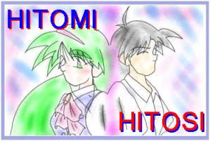
（鈴） ＰＲＯＭＩＳＥって、お約束の事だったんですかぁ〜？
（角さん）ピンポ〜〜ン
では、続きをお楽しみ下さい！
（仁志サイト） （瞳ちゃんサイト）
俺は、瞳にバックドロップを決められて、階段を転げ 私は仁志にバックドロップを、決めて階段を転げ落ちた。
落ちた。 ブラックアウトする視界。
暗転する、視界。 私は死ぬの・・・・・
俺は死ぬのか？ 見知らぬ、お花畑。
川が見える・・・ きれい・・・・・
その川の向こう岸から、去年死んだばぁちゃんが俺を呼ぶ。 そうだ、このお花を使って花輪を作りましょう。
「ひとし〜〜、ひとし〜〜〜」 色とりどりのお花を使って花輪を作る。
ばぁちゃん・・・ 「きれいな花輪だね！」
「ひとし〜〜、こっちにおいでぇ〜〜」 空から声が聞こえてくる。
ばぁちゃんが向こう岸から手招きをする。 見上げると、そこには１人の天使が、翼を羽ばたかせ、
素直な俺は、川に向かって歩いていく。 私の前に舞い降りる。
ばぁちゃん、今行くよ・・・ 「瞳ちゃん、一緒に行こう！」
「ひとし〜〜」 「どこに・・・・」
右足が、川につかる・・・ 天使は、ニッコリ笑いながら答える。
フッと、川岸ににある看板を見る。 「あ・の・世・・・・」
そこには、三途の川と書いてある。 ドカッ、バキ、グシャア〜〜〜ッ
「って、死んじゃダメじゃん！！」 天使・・・・・・撲殺・・・・・
その瞬間強い衝撃と共に、俺の意識は覚醒していく・・・ その瞬間、私の体は、まばゆい光に包まれて、意識は
「う〜〜、いててててっ」 覚醒していく・・・・
「くっそぉ〜、瞳の奴、無茶しやがって！」 「あいたたた〜〜〜」
「普通、階段で、バックドロップするかぁ〜」 「う〜っ、やっぱり階段での、バックドロップは無理が、
階段から落ちたせいで、体中ズキズキする。 あったわね」
周りを見てみると、廊下に１人の少年が、女座りをして、 「仕方が無い、階段でのバックドロップは、封印しましょう」
俺の方をボーッと見ている。 しかし、派手に転げ落ちたわね〜
その少年は、切れ長の目、引き締まった口、すっと流れる顎 屋上から一階まで、落ちちゃうんだから・・・・
う〜〜ん、二枚目な男だ。 仁志もこれに懲りて、スケベな事しなくなるわね！
しかし、この男どっかで見たことがある。 って、仁志はどこ？
う〜〜ん、こんないい男、そうはいないぞ、 周りを見渡しても、仁志の姿はない。
どこで会ったかなぁ〜 そのかわり、女の子が、片膝を立てて、
う〜〜ん 廊下に座り込んでいる。
う〜〜ん その女の子は、流れるような長い髪、つぶらな瞳、
んっ、こんないい男、俺しかいね〜〜じゃん！ 艶やかな唇、う〜〜ん、美しい。
何だ、俺だったのか・・・ こんな、美少女、この学園にいたかしら・・・
って、あそこにいるのが俺だったら、俺は誰？ う〜〜〜〜〜〜〜〜ん
っと言っても、この状況を考えれば、だいたいの予想はつく。 って、あれって、私じゃない！！
まあ、名前がひとしとひとみの一字違い、 じゃあ、私は誰？
それに階段落ちって言ったら、何が起こったかすぐ解る。 私は嫌な予感と共に、自分の体を確かめる。
ここで、『うわ〜、俺はなんで瞳になちまったんだぁ〜』 ゆっくりと、視線を落とすと、私は男物のシャツを
とか言ってパニックを起こすような、バカな事はしない。 着ていて、ズボンをはいていた。
今の状況を楽しまなきゃ・・・ うそ〜〜〜〜〜〜〜っ！
そう、俺は楽天的なのだ！ 私の豊満な胸は？
では、お約束の身体検査と行こうか！ 私の白く艶やかな肌は？
俺は、自分の体を確かめようと下を向くと、サラサラした 一体どこ行ったのよ〜〜〜〜！！
長髪が頬をなでる。 そして、私はおそるおそる股間に手を伸ばす。
その感触を気にしながら、自分の胸に視線を落とす。 ある〜〜〜〜〜！！
その豊満な胸は、自分の存在を主張するように、 もっもしかして、これって、お約束なのぉ〜〜！！
服を押し上げている。 まさか、階段から落ちて、体が入れ替わるなんて、
でかい・・・・ 思って見いなかったわ〜〜〜っ
俺は、おそるおそる、胸を触ってみる。 どうしよう・・・・
むにぃっ お風呂は・・・
うぉぉっ、柔らかい！ トイレは・・・
俺のか細い指は、その膨らみを確かめるように 私は男として、
服にしわをつけながら、埋没していく。 スケベ仁志として、生きて行かなきゃならないの・・・
その感覚は、今まで俺の味わった事のない胸を揉むと 嫌よ、そんなの絶対いや！
言う感触と、揉まれると言う二つの感覚が入り交じった 他の男の子ならまだしも、なんであのスケベ仁志と、
妙な感覚だ。 入れ替わらなくちゃいけないのよ〜〜！！
しかし、嫌な感覚では無く、むしろ快感に近い物だった。 神よ、私は、あなたを恨みます・・・
俺は、我を忘れて、その快感に酔いしれる。 グスン・・・
もみっ もみっ
あっ・・・ んっ？なによ、この擬音は？
もみっ もみっ
んっ・・・ えっ、まさか・・・
もみっ もみっ
ああっ・・・ 私は、私の体の方を振り向くと、愕然とした。
この掌に伝わる柔らかい感触・・・・ 仁志は、この異常な状況の中、平然と自分の胸を
白昼堂々と、瞳の胸を触るという行為・・・ 揉んでいる。
素晴らしい・・・・ その顔は、何とも言えない恍惚の笑みを浮かべながら・・
神様、こんな素晴らしい奇跡を、起こしてくれて、 あっ、あいつ〜〜〜〜
ありがとうございます・・・・ 私の頭の中は、怒りで真っ白になる。
フッ・・・・ フッ・・・
えっ？ っと言う風切り音を立てながら、私の右手は仁志の
何だ、この風切り音は・・・ 顔面に突き刺さる。
ブァキーーーーーーーッ！！ ブァキーーーーーーーッ
いきなり頬に衝撃を感じると、俺の体は、廊下の柱に ごめんね、私の体・・・
叩きつけられる。 私のパンチを受けた私の体（仁志）は、廊下の柱に
ドカン！！ 叩きつけられる。
「あっあっあんた、私の体で何やってんの！！」 「あっあっあんた、私の体で何やってんの！！」
鬼の形相をした、俺（中身は瞳なのだが）が拳を握りしめ、 壁に叩きつけられた、仁志はブルブルと首を
俺を見下ろす。 振り、
「う〜、いって〜〜」 「う〜、いって〜〜」
「普通、自分の顔、グーで殴るかぁ〜？」 「普通、自分の顔、グーで殴るかぁ〜？」
俺は、殴られた、頬をさすりながら、俺になった瞳に言う。 と言いながら、殴られた頬をさすっている。
「うるさい！！」 「うるさい！！」
「あんた、何、人の胸、揉んでんのよ！！」 「あんた何、人の胸、揉んでんのよ！！」
「何、言ってんだ、今は俺の胸だ！！」 「何言ってんだ、今は俺の胸だ！！」
と言いながら、自分の胸を揉む。 仁志はそう言いながら、平然と、
すると、俺になった瞳の顔が、どんどん赤くなっていき、 自分の胸を揉んでいる。
怒りの表情を形成させていく。 ブチン、何かが頭の中で切れる音がする。
「ぎゃぁぁ〜、殺してやるぅ〜〜！！」 「ぎゃぁぁ〜、殺してやるぅ〜〜！！」
「あんた殺して、私も死ぬ〜〜！！」 「あんた殺して、私も死ぬ〜〜！！」
やべっ、瞳の奴、切れやがった。 これ以上、私の痴態は、見たくない！！
「死ね〜〜っ」 「死ね〜〜っ」
瞳は、怒声と共に俺に馬乗りになる。 私は、仁志を押し倒すと、馬乗りになる。
マウントポジションを取った瞳は、俺の両腕を押さえ、 私のか細い腕を押さえ込み、身動き出来ない様にする。
頭突きをする。 このまま、頭突き殺してやる！
ゴン！ ゴン！
「死ね〜〜っ」 「死ね〜〜っ」
ゴン！ ゴン！
「死ね〜〜っ」 「死ね〜〜っ」
ゴン！ ゴン！
「死ね〜〜っ」 「死ね〜〜っ」
ぐぉぉ〜〜〜っ 私（仁志）の顔が、苦痛で歪む・・・
マジで、死んでしまう〜〜 しかし、これ以上、私の体を仁志のおもちゃに
瞳の奴、マジで俺を殺す気だ！ しておけない。
ゴン！ ゴン！
ゴン！ ゴン！
ぐぅぅ〜頭が割れる〜〜〜 う〜、頭が痛くなってきた、でも、もう少しの我慢！
「さぁ、楽になりなさい！！」 「さぁ、楽になりなさい！！」
瞳は、血走った目で俺を睨み付け、トドメを刺そうと、 トドメよ、こんな異常な話は、ここで終わりに
体をのけ反らす。 しましょう。
殺される・・・ 私は、思いっ切り、体をのけ反らす。
こうなったら最後の手段だ・・・ すると・・・
「きゃぁぁ〜〜、犯されるぅ〜〜〜」 「きゃぁぁ〜〜、犯されるぅ〜〜〜」
「誰か助けてぇ〜〜〜〜！！」 「誰か助けてぇ〜〜〜〜！！」
俺の口から出た、かん高い叫び声は、校舎内に響きわたる。 私の耳に、突き刺さるような、かん高い叫び声が、
さて、どうなるかな？ 校舎に響きわたる。
「えっ？」 「えっ？」
瞳は、鳩が豆鉄砲を食らったような顔をして固まる。 こいつ、何言ってるの？
そして、俺の声を聞きつけた、生徒達が教室から しかし、これは仁志の罠だったのだ。
出てくる。 仁志の叫び声を聞きつけた生徒達が、教室から出てくる。
「えっ、えっ？」 「えっ、えっ？」
今の状況が理解できない瞳が周りをキョロキョロと見わわす。 瞬く間に、私達の周りに人だかりが出来る。
すると・・・ すると・・・
「てんじょ〜〜〜う！」 「てんじょ〜〜〜う！」
「てめ〜〜、とうとうやりやがったな！！」 「てめ〜〜、とうとうやりやがったな！！」
俺達の体を取り囲む男子達。 私の周りを、取り囲む男子達・・・
「ちょっと、何よあんた達」 「ちょっと、何よあんた達」
「何だ、お前、女言葉なんか使いやがって」 「何だ、お前、女言葉なんか使いやがって」
「少し、説教した方がいいな！！」 「少し、説教した方がいいな！！」
「そーだ！」 「そーだ！」
「そーだ！」 「そーだ！」
そう言って、クラスの男子達は、瞳の襟首を掴み、 そう言って、クラスの男子達は、私の襟首を掴むと
ズルズルと教室の中に引きずって行く。 ズルズルと教室の中に引きずって行く。
「きゃ〜、待って、私が瞳なのよ〜〜」 「きゃ〜、待って私が、瞳なのよ〜〜」
しかし、瞳がいくら訴えても、クラスの男子には、 そう言っても、男子達は、誰も信じてくれない。
聞こえていない。 １人廊下に残る、仁志が男子達に言う。
「みんな、仁志君にあまり酷い事しないでねっ」 「みんな、仁志君にあまり酷い事しないでねっ」
とりあえず、自分の体の為にホローをしておくが、たいてい く〜〜っ、あいつあんな事、言ってる。
この後、瞳はみんなにボコボコにされるだろう。 むかつく〜〜、絶対、殺してやる！！
どうか、瞳が死にませんように・・・ ＜教室＞
すると、騒ぎを聞きつけた朋子ちゃんが、俺に駆け寄ってくる。 私は、男子達に引きずられて、教室に押し込められた。
「ひとみ〜〜」 私を取り囲む男子達の１人、藤田が私に詰め寄る。
「瞳、大丈夫？」 「天上、女子のスカートをめくるのはいいとしても、
「まさか、仁志君が、あんな事するなんて・・・」 白昼堂々、我等がマドンナ、入江 瞳を襲うとは、
朋子ちゃんは、俺の正面に腰を下ろすと、俺をまっすぐ見て、 何考えてんだ！！」
「大丈夫？」 「えっ！」
っと、もう一回聞く。 「ねぇ、今言った事、もう一回言って！！」
「ふぇ〜〜ん、朋子、恐かったよ〜〜〜っ」 藤田は、眉をしかめて、今言った事をもう一回言う。
俺は、朋子ちゃんの胸に顔を埋め、顔を左右に振る。 「天上、女子のスカートをめくるのはいいとして・・・」
うへへ、柔らけ〜〜〜っ 「違う、違う、後半に言った事よ！！」
「ちょっ、ちょっと瞳・・・・」 「白昼堂々、我等がマドンナ、入江 瞳・・・」
う〜〜ん、やっぱり、入れ替わりは、相手の立場を 「はいっ、ストップ！！」
最大限利用する。 「そこを、もう一回！！」
それが、入れ替わりの醍醐味じゃないか？ 「だから、白昼堂々、我等がマドンナ、入江 瞳・・・」
っと、言う事で、俺は、瞳の友達の、朋子ちゃんの胸を揉む。 「はうぁ〜、そう、そうなのね、私って、あなた達の
もみもみ マドンナだったのね！！」
もみもみ 「マドンナ、今の時代、死語になりつつある引用を、
すると、 私に使ってくれるの？」
「あっ、そうだ！！」 「この、懐かしくノスタルジックな響き・・・」
そう言って、朋子ちゃんは、急に立ち上がる。 「ス・・・、テ・・・、キ・・・・」
ゴン 「おい、お前、頭は大丈夫か？」
朋子ちゃんに体を預けていた俺は、体勢を崩し、 「ホーッホッホッホー、フヂタくん、私は大丈夫よ！！」
そのまま廊下に頭をぶつける。 「さぁ、見なさい！！」
「いててっ、どうしたの、朋子ちゃん？」 「あなた達のマドンナが、今ここに現れたのよ！！」
「瞳！！次の時間は体育よ！」 私が、バレリーナのようにくるりと回転すると、
「はぁ？」 体にスポットライトが当たり、周りでは次々と
「だから、次の時間は体育だから、着替えに行くの！！」 バラの花が咲いていく。（イメージ表現）
「う〜ん」 「天上、バカだ、バカだと思っていたけど、
「またもやお約束の着替えイベントか」 ここまでバカだとは、思わなかったぞ・・・」
「しかし、前振りも無しにいきなり話を進めるとは、 藤田はそう言うと、周りにいた男子達とため息を
角さんも無茶するなぁ〜」 つきながら、私から離れていく。
「それに、俺はこの学園の何年生で、今は何時間目なんだ？」 「おい天上、次は体育の授業だから早く着替えろよ！！」
「私たちは、この聖ラフレシア学園の二年生で、１６才」 クラスの男子、平野が、私の肩を二回叩き、
「今は、昼休み中、解った！！」 哀れみの目をしながら私を一別すると、自分の机の方に
「はっ、はいっ」 帰っていく。
なんか今さっき思いつきで考えた設定だなぁ〜 「体育・・・着替え・・・・」
「さっ、更衣室に行くわよ！」 「何、このお約束な展開は・・・」
「はいはい」 「まさか・・・」
＜女子更衣室前＞ 私はおそるおそる周りを見回すと、
女子更衣室、そこは男の入ることの出来ない聖域。 男子達が、次々と服を脱ぎ始めていく。
その聖域に入ることの出来ない俺は、それを影から覗くと 「キッ、キッ、キッ・・・」
言う事しか出来なかった。 「キャァ〜〜〜〜！！」
しかし、今は違う、この瞳の、女の体であれば、 「あんた達、ここに可憐な乙女がいるのに、
この聖域に入ることが出来る。 何、平気で着替えてんのよ〜！！」
「そう、俺はこの聖域に入るためのパスポートを 「なにぃ〜〜〜！！」
手に入れたのだぁ〜〜！！」 「女だぁ〜〜〜！！」
「どっどうしたの、瞳？」 「女は、どこだ、どこにいるんだぁ〜〜！！」
「急に、大声出して・・・」 私の声を聞いて、男子達は野獣のような目で周りを、
「えっ？」 見回している。
「ほほほっ、何でもないわよ〜〜っ」 「お前、女はどこにいるんだよ！！」
「さぁ、朋子、早く着替えましょう！」 私に詰め寄る男子達
「えっ、ええっ・・・」 「何言ってるの、ここにカワイックって、
ガラガラガラ・・・・ ナイスボディーな女の子がいるじゃない・・・」
更衣室の扉を開ける。 っと、言いながら、私は自分の体を撫でるように
そこに一歩足を踏み入れると、女の子の甘い香りが 下から上へと触っていく・・・
漂ってくる。 しかし、私は自分の体を触っていくうちに重大な事に
その鼻をくすぐる甘い香りを楽しみながら奥に入る。 気付く。
「瞳、早く着替えなよっ」 「！！」
そう言うと、朋子ちゃんはおもむろに服を脱ぎ出す。 あっ、そう言えば私、今、スケベ仁志になってるん
おお〜〜〜っ だった・・・
周りを見てみると、女の子達が、無警戒に服を脱ぎ出す。 ガ〜〜〜ン
この中に、一匹の狼が紛れ込んでいる事も知らずに・・・ 私は石になる・・・
父さん、母さん、天国のばぁちゃん、 「おい天上、何、石になってるんだよ！！」
俺は、とうとうやったぞ！！ 「はい？」
「俺は、この聖域を征服したんだぁ〜〜！！」 私の周りを取り囲んでいる男子の声で、
ポコン 石化が解ける・・・・
「こらっ瞳、早く着替えなって、言ってるでしょう！」 「それより天上、女はどこにいるんだ？」
「はっ、はい・・・」 目を血ばらせた男子達が私に詰め寄る。
「しかし、あんたさっきから変よ！」 よく見ると、みんな、着替えをそっちのけで、
「いえ、何でもありません」 半裸状態のまま、私に詰め寄ってきている。
「ただ少し、この素晴らしい状況に取り乱してしまいました」 「キャア〜〜！！」
「あっ、そうなの」 「脇毛、ボン！！」（吉Ｏヒロ風）
って、朋子ちゃん、ここは普通、ツッコム所だろ！！ 「胸毛、ボン！！」（Ｏ田ヒロ風）
それに、納得してるし・・・ 「すね毛、ボン！！」（吉田ヒＯ風）
まっ、朋子ちゃんが言う通り着替えるか！ （伏せ字の意味、無いか）
スルスルとブラウスを脱いでいくと、ブラジャーに覆われた、 「ふぇぇ〜〜〜、男性ホルモン剥き出しの〜〜
あの、ふくよかな胸が目に入る。 モジャゲルゲ〜〜〜〜〜〜！！」
女の視点・・・ ドカッ、ベキッ、ドカッ、グシャァ〜〜〜！！
何とも言えない眺めだ、男の俺には一生拝むことの 体中に無駄毛を生やした男子達に、私の鉄拳が飛ぶ！！
出来ない眺めだ。 「ぐほぉ〜〜！！」
ブラジャーからはち切れそうな胸。 「がはっ！！」
しかし、ブラジャーは、優しく、しっかりと胸を包んでいる。 「うげ〜〜！！」
う〜〜ん、胸が、でかすぎて、下がよく見えない・・・ 「ぐぅぅ〜っ、天上がいきなり切れやがったぞ！！」
「瞳、何、自分の胸見て、固まってんのよ」 「みんな、奴を取り押さえろ！！」
朋子ちゃんの声で我に返る、つい自分の胸に 私に殴り倒された男子達は、ゾンビのように立ち上がり
見とれてしまった・・・ ジリジリと私に詰め寄ってくる。
「あははっ、何でも無いの、気にしないでっ」 「ふっ、ふぎゃぁ〜、気持ち悪いぃ〜〜！！」
「それより、はいっ、瞳の体操服！」 私は、自分の前に置いてある机を、男子達に向かって、
「あっ、ありがとう」 投げつける。
朋子ちゃんから受け取った、瞳の体操服。 バキーン！！
上着に袖を通し、身につける。 投げつけた机が、空中でまっぷたつに割れる。
そして、最後に残った物・・・ 「天上、これ以上の狼藉は、俺がゆるさんぞ！！」
ブルマ・・・ 私の投げつけた机を、上段蹴りで破壊した空手部員、
う〜〜、これは男としてかなり勇気がいるぞ！ 梶山が私の前に立ちふさがる。
俺は、女の子のブルマ姿は好きだが、 「ふぎゃ〜、マッチョ〜、キン肉メ〜〜〜ン！！」
まさか、それを身につける事になろうとは・・・ 私は、毛むくじゃらの次に、マッチョが嫌いだ！！
言っとくが、俺に女装趣味は無い、 「私に近づかないで〜〜〜！！」
あくまで俺は中身が好きなのだ。 私の放った右拳は、螺旋を描くように空を切り、
しかし、このままブルマを眺めていてもしょうがない。 梶山の左顎をとらえる。
意を決して、ブルマを履くことにする・・・ 梶山の顔は、９０度左回転すると、白目をむいて
なんか、男の尊厳を失われるような感じと、 仰向けに倒れ込む。
ブルマのピッタリとしたフィット感が、 「おおぅ、空手三段の梶山が倒されたぞ！！」
何とも言えない気分にさせる。 梶山が倒された事に、動揺する男子達。
はぅぁ〜〜、私、女になったのね・・・ （ここで、なんで梶山が倒されたのか説明しておこう。
「なぁ〜〜んて、思うかぁ〜〜！！」 瞳ちゃんの弱い力で、男の仁志を殴るには、手加減無し
「ひっ！！」 でないと仁志は倒せなかった。しかし、女の瞳ちゃんの
周りの女の子達が、俺の叫び声にビックリする。 力では、どんなに本気で殴ろうと空手で鍛えた梶山は、
「瞳！何大声だしてんの！！」 一発で倒すことは出来なかっただろう。
「やっぱり、さっき、仁志君となんかあったんでしょう」 だが、今の瞳ちゃんは、仁志の体になっている。
「いや、何でも無いよ、何でも・・・」 仁志の体になっているって事は、男の力が出せる。
「本当？何なら、今日の体育休んでも良いのよ」 そう、男の力と手加減無しのパンチ、この二つのフラグが
「いえ、それだけは、やらしていただきます！」 立つ事により、今の瞳ちゃんは、普段の二倍（当社比）
「そう・・・」 の力を出すことが出来たのだ。だから梶山をパンチ一発で
朋子ちゃんは、俺の迫力に押されて押し黙ってしまう。 倒すことが出来たのだろう。）
女の子だけの体育の授業、それは、男の俺にとって、 「オーッホッホッホー」
ハーレムと同意となる。 「今の私に敵は無し、さぁ次は誰が相手？」
そう言う、おいしい授業を、みすみす逃してなるものか！ 私は、調子に乗って、男子達ににじり寄る。
「さっ、朋子ちゃん着替え済んだから、グランドに出よう！」 「くそ〜、今日の天上は、女言葉使っているのに、
「うん！」 無茶苦茶強いぞ！！」
俺は、朋子ちゃんと一緒に魅惑の更衣室から出た。 「こうなったら、人海戦術だ！！」
しかし、角さんならここで、絵を入れるはずなのに、 「みんな、一斉に突っ込め〜〜！！」
入ってない何故だ・・・ クラス委員長の中沢が、合図を送ると男子達が一斉に、
まっ、まさか、手抜き・・・ 私に突っ込んでくる。
（いや〜、違うんですよ、只、女の子を沢山書くのが、 「えっ？」
めんどいとか、下着の資料が無いとか、そんなんじゃなくて、 さすがの私も、一度に十何人もの男を相手には出来ない。
あんまり、エッチな絵は、ひかえようかなぁ〜と思って） 「ちょ、ちょと、ま・・・・」
じゃあ、なんで俺のキャラ設定が、スケベに 私が待ったをかける前に、男子達に押しつぶされる。
なってんだよ！！ 「うぅ〜、潰れるぅ〜〜」
（だって、オヤジがぁ〜〜） 次々と半裸の男子達が、私の動きを止める為に
うるせえ！！ 私の上に乗ってくる。
ドカッ！！ 「うぅ〜」
（あぅぅ、どっかで絵を書きますから〜〜） 「！！」
＜グランド＞ 「臭い・・・」
俺は、朋子ちゃんとグランドに出てきた。 臭い、臭い、臭い、臭い、男臭い・・・
グランドを見てみると、先に着替えた女子達が、 何？この臭さ、汗や、ワキガ、足の臭い、ありとあらゆる
授業の始まるのを待っている。 男臭い臭いが私の鼻を刺す。
白く瑞々しい生足、う〜〜たまりませんぁ〜〜 プチン・・・
しかし俺も、ブルマ履いて、生足でいるんだよなぁ〜 何かが、私の頭の中で切れる。
ちょっと自己嫌悪。 それと共に、頭の中で、誰かの声が響く・・・
だが、落ち込んでるだけじゃない。 『シンクロ率低下、パルス逆流しています！』
そう、この体、女同士なら、警戒されず、怪しまれず、 『なんて事！！』
女の子達に近づける。 『エントリープラグ強制射出、外部電源切断、急いで！』
しかも、授業は、体育！ 『駄目です、信号拒絶、受信しません！！』
さりげなく、女の子に触ることが出来る。 『・・・・暴走します！！』
ぐふふふふっ・・・ 『指令！！』
「瞳、先生来たから行くよ！」 『ニヤリ・・・・』
「えっ、はぁ〜〜〜い」 「うぉぉぉぉぉ〜〜〜〜〜っ！！！」
そう言って、俺は朋子ちゃんとみんなのいる 私は無意識に、上に乗ってる十何人の男子達を、
グランド中央に走っていく。 吹っ飛ばし、ユラリと立ち上がる。
グランド中央には、体育の愛先生がいる。 「フーッ、フーッ、フーッ、フォォォーッ！！」
その前には、うちのクラスの女子達がきれいに整列している。 ゴキン！！
体育の愛先生、フルネームは、原田 愛（はらだ めぐみ） バキン！！
今年大学を卒業したばかりの２３才、可愛く、 ボグシャー！！
その大らかな性格は、男子生徒に大うけで、影で先生を、 私は周りにいる、男子達を見境無く、殴り倒す！！
ねらっている奴はかなりいる。 「ぐぁぁ〜、こいつ手が着けられないぞ！！」
まぁ、俺もその１人だったりするのだが・・・ 「ぐぉぉ〜〜〜！！」
「みんな、集まったみたいね！」 「ぎゃ〜〜〜！！」
「それじゃあ、体育の授業始めましょう！」 「誰か、こいつを何とかしろ〜〜！！」
愛先生は、ニコニコと元気良く言う。 教室の中に、阿鼻叫喚の地獄絵図が繰り広げられる。
「あれっ、そう言えば、今日は体育の剛田先生が主張で 「フーッ、フーッ・・・・」
男子と合同でやることになってるんだけど、男子の姿 しかし、いくらリミッターが切れていると言えども、
見えないわね！」 これだけ多くの男子達を相手にすると、私の体力も
そう言うと、先生は額に右手をかざし、キョロキョロと 続かなくなってくる。
グランドを見回す。 「そろそろ、潮時ね・・・・」
こういう、可愛い動作が、またさらに愛先生の人気を上げる。 私は、男子達をなぎ倒しながら、窓ガラスに駆け寄り、
しかし、今日の体育の授業は、ヤローと一緒かよ、 アクションスターばりに、廊下側の窓ガラスに飛び込み、
折角、１人でハーレム気分を味わおうと思ってたのに・・・ そのまま、廊下に飛び出る。
ガッシャーン！ ガッシャーン！
校舎から、ガラスの割れる音が聞こえ、俺の思考を 「くそー、天上が逃げたぞ！！」
ストップさせる。 「動ける奴は、天上を追え！！」
えっ、何が起こったんだ？ 「イエッサーッ！！」
そう思い、校舎の方に目を向ける。 ＜二階廊下＞
周りの女子達も、ざわめきだし、校舎の方を向いている。 私は、あのむさ苦しい教室から抜け出し廊下を
しばらくして、校舎から１人の男子生徒が、ヨロヨロと ひた走る。
しながらグランドに出てくる。 「てんじょ〜、待ちやがれ〜〜〜！！」
クラス委員長の中沢だ。 叫び声に振り返ると、バスケ部の田中と、陸上部の
中沢は、やっとの事で、俺達のいる所に着くと 高田と、卓球部の伊沢が、私を追って来ている。
「せっ、先生・・・」 「くぅぅっ、追っ手を放ったか！！」
「遅れてすいませんでした・・・・ガフッ」 走りながら、何か武器はないかと周りを
そう言って、中沢は大げさに倒れる。 見回していると、消火器が目に飛び込んでくる。
「どうしたの、中沢君！！」 「しめた！！」
先生は、慌てて中沢に近づき、抱き上げる。 私は、その消火器を手に取り、廊下の真ん中で
羨ましい奴だ・・・ 立ち止まる。
「先生・・・先生・・・、天上が、天上が・・・」 「よ〜〜し、天上そのままじっとしてろよ・・・」
ガクッ 「我が、同胞の敵、今こそ討ってやる！！」
中沢は、天を掴みながら、息絶える。 ３人は、ジリジリと私との間合いを詰めてくる。
「中沢君！中沢君！！天上君がどうしたの？」 「討てるもんなら、討ってみなさいよ！！」
「なかざわく〜〜〜ん！！」 私はそう言うと、振り返り、３人に消火器を見せる。
どこからともなく２人にスポットライトが当たり、２人は、 「！！！」
自己陶酔の世界へと旅立つ。 それを見て、固まる３人・・・
ゲシッ！！ （瞳ちゃんの消火器の使い方）
「中沢、死んだふりはもう良いから、何があったか １．グリップの所にある、安全ピンを抜く。
説明しろ！！」 ピン！
愛先生に抱きかかえられ、恍惚の笑みを浮かべながら ２．ホースをはずし、目標物に向ける。
死んでいる中沢に、蹴りを入れて現実世界に呼び戻してやる。 キュウポッ！
「えっ？」 ３．グリップを握り、目標物に消火液をかける。
中沢は、目を丸くして、俺の方を見る。 グイッ！！
「はぁぁ、僕は今、我等が、マドンナ入江さんに プシャァーーーーッ！！
踏まれたんだぁ〜」 ４．飽きたら消火器を、目標物に投げつける。
「入江さん、もっと僕を踏んで下さい」 ブン！！
「僕は、クラスで起こった騒ぎを止めることの出来ない プショォォォォーーーーン！！
ダメ人間なんです」 ガン！！
「だから、もっと踏んで下さい！」 消火器は、白い煙（消火剤）を勢い良く吹き出しながら、
そう言って、中沢は、俺の太股にしがみつく。 ３人目掛けて飛んでいく。
きっ、気持ち悪い・・・・ 注：良い子の皆さんは、絶対まねしないで下さい。
ダメだ、こいつ、完全に壊れてやがる。 「ゲホッゲホッ、くそ〜、天上の奴、無茶しやがる！」
壊れた中沢に、蹴りを一発入れて、トドメを刺す。 「ガハッゲホッ、あいつは、どこに行った？」
ドゲシ！！ 「ゲホッオエ〜ッ、くそ〜、煙で何も見えないぞ！！」
中沢は、さらに恍惚の笑みを浮かべ、 「ホーッホッホッ、あんた達、この美少女と言う外面を、
「入江さんに蹴りを入れて貰って、シアワセ・・・」 外した私に、けんか売ったのが運のつきね！！」
っと言いながら、息絶える。 「でも、悪いのは全て、あのスケベ仁志が悪いのよ！！」
そんな中沢を尻目に、校舎の方を見ると、二階廊下から白い 「ごめんね、私もこんな事したくないのよ・・・」
煙が上がり、玄関から、クラスの男子がワラワラと出てくる。 「ごめんね・・・」
「おいっ、教室で、何が起こったんだ！！」 「ウフフフフ・・・」
息を切らせながら出てきた、男子生徒の１人、藤田を呼び止め 「フフフ・・・」
聞いてみる。 「さぁ、トドメを刺しましょう・・・」
「てっ、天上が、いきなり切れて逃げ出したんだよ！！」 「死ね〜〜〜〜！」
「それで、今も逃げ出した天上を追いかけて、田中と、高田と、 ドカッ！！
伊沢が追っかけてんだ！！」 バキッ！！
一体、瞳の奴は何やってんだ・・・ ボカッ！！
そう思っていると、校舎から破壊音と共に、叫び声が 私は、煙で周りの見えない３人に突っ込んでいき、
聞こえる。 一発ずつ強烈なトドメを刺していく。
「お手紙、ちょ〜だ〜〜い！！」 「お手紙、ちょ〜だ〜〜い！！」
「くそぉ〜、田中達もやられたぞ！！」 ３人はそう叫びながら、廊下の端までブッ飛んでいく。
「ちくしょ〜〜〜！！」 「ふぅ、戦いとは、いつもむなしい物ね・・・」
うなだれる男子達。 私は、１人そうごちると、追っ手を振りきる為、
「とりあえず、若くして散った我が同胞に・・・」 とりあえず屋上に身を隠すことにした。
「けいれ〜〜い！！」 ＜屋上＞
びしっ！ 「ハーッ、ハーッ、ハーッ・・・」
グランドに規則正しく整列した、男子達が 「何とか追っ手を振りきったみたいね！」
天を仰ぎながら、敬礼する。 ここまで全力で走ってきたので、かなり息が切れている。
「ここで戦場コントを、するなぁ〜〜！！」 しかし、女の体でこんな無茶をやったら只では
とりあえず、ツッコミを入れておく。 済まなかっただろう。
「はいはい、それでは、みんなそろったようなので、 そう考えると、男の体の頑丈さをつくづく思い知らされる。
体育の授業をしましょうか！」 ちょと、羨ましいかな・・・
愛先生は、手をパンパンと叩くとニコニコしながら そう思いながら、屋上の手すりに両肘をつき景色を眺める。
みんなに言う。 空は澄み渡り、雲はゆっくりと流れていく。
そこに藤田が出てきて言う。 「いい天気ね・・・」
「先生、まだ天上が来てませんけど・・・」 さっきまで、男子達を相手に大立ち回りしていた事が、
「じゃあ、天上君は生理休みって言う事で！」 まるでウソみたいに思えるぐらい、のどかな昼下がりだ。
「なんでやねん！！」 でも、仁志以外の男子相手に喧嘩するなんて、
クラス全員、総ツッコミ 子供の時、以来かもしれない。
この先生、大らかと言うより、天然だ・・・ 「なんか、久しぶりにストレス解消したみたい・・・」
「それじゃあ、遅刻してきた男子は、グランド１００周！」 そう、１人ごちると、男でいるのも悪い気はしなくなる。
愛先生は、可愛い顔して地獄みたいな事を言う。 女の体では、周りの目を気にして、さっき見たいに
もちろん、男子のブーイング、しかし・・・ 思いっ切り暴れられない・・・
「みんな私の言う事聞けないの・・・グスッ」 私は、知らず知らずの内に、女の子を演じていたのかも
この一言で、男子達は、バカみたいにグランドを回り出す。 しれない・・・
女って、恐ろしい・・・ 「なんだかな〜」
そんな事を思っていると、愛先生は、女子に向かって言う。 そう言いながら、青空を見ていた視線をゆっくり
「女子は、柔軟体操、２人一組になってね！！」 グランドの方に落としていく。
「瞳、一緒にやろ！！」 そう言えば、今は体育の授業中だったわね。
朋子ちゃんが、俺に近づいてくる。 グランドでは、体育の愛（めぐみ）先生を前にして、
チャーンス！！ クラスの女子達が、柔軟体操をしている。
「うん、一緒にやろ！」 「！！」
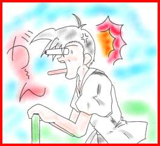
そう言って、まずは、２人で軽く、屈伸運動をする。さて、これからは、朋子ちゃんとスキンシップのコーナー！
「グフッ、グフフフフッ」
「瞳、その笑い方不気味だよ！」
朋子ちゃんは、両足を伸ばして座りながら、俺の方を
上目遣いで見て言う。
「それより、瞳、背中押してくれない？」
「えっ、うん・・・」
朋子ちゃんに言われるままに彼女の背中を押す。 柔軟体操をしている女子の中に、ニタニタと緩みきった
小さい背中に両手をおき、軽く力を加える。 顔をした私が、嬉しそう朋子の体をベタベタと触っている。
すると、その体は何の抵抗もなく、 「ひ〜〜と〜〜〜し〜〜〜〜〜！！」
くの字型に折れ曲がっていく。 あいつ、あいつ、私の体を玩具にした上に朋子まで、
女の子の体って、こんなに柔らかいのか・・・ その毒牙にかけようとしてるの！！
改めて、女の子の体の柔らかさに驚かされる。 さっまで、空を見上げ、のんびりとした雰囲気に浸ってた
「瞳、痛いよ〜」 私はもういない。
「あっ、ごめん！」 「ころす・・・殺す！！」
朋子ちゃんの言葉を聞いて、慌てて両手を背中から 私は黄金のオーラを放ちながら、グランドを見下ろす。
離そうとしたが、俺は、そのままよろけて朋子ちゃんの しかし、仁志はそんな事には気付かず、ニタニタしながら
背中に覆い被さる。 朋子に覆い被さっている。
「きゃっ！」 「ゆるさない！！」
突然俺が、覆い被さったので朋子ちゃんが悲鳴を上げる。 私は奴に何かをぶつけようと、辺りを見回す。
「ごめん、ごめん」 広い屋上をキョロキョロと見回していると、昇降口の所に、
そう言いながらも、朋子ちゃんから離れようとするが、 コーヒー豆が入っているような、麻袋が立てかけてある。
離れられない。 近づいて見てみると赤いペンキで”瞳、撃退グッツ”と
いやっ、離れたくないのだ。 大きく書いてある。
少しでも長く、この朋子ちゃんとの その袋を手に取り、中身を見てみる。
密着時間を楽しみたいのだ。 中には、パチンコ玉一袋、発煙筒二本、打ち上げ花火一本、
これも、悲しい男の性だ・・・ ライター一つ、スプレー式湿布剤一個、エアガン一丁、
「？」 なっなによ、この強力な武器の数々は、可憐な乙女の私に、
「ねぇ、瞳、さっき屋上が光らなかった？」 これを使おうとしてたの、あのバカは・・・
「えっ？」 「まっいいわ、仁志が隠しておいた武器は、私が有効に
朋子ちゃんの、突然の問いに我に返る。 使わして貰うわ！！」
俺は、朋子ちゃんに言われるままに屋上を見上げる。 （瞳ちゃんは、”瞳、撃退グッツ”を手に入れた。）
しかし、屋上は光ってない。 さて、武器を手に入れたけど、何を使って奴を、
「別に光って無いみたいだよ」 攻撃しようかしら・・・
「そう、確かにさっき、光ったように見えたんだけど・・・」 私は、麻袋の中を漁る。
そう言いながら、朋子ちゃんは首を傾げ、屋上を 「よしっ、このエアガンで仁志を狙撃するわよ！！」
見上げている。 私は、屋上の手すり越しにグランドで朋子ともつれ合って
「やっぱり、私の見間違いだったのかなぁ〜〜」 いる仁志をエアガンでねらう。
「そうそう、見間違い、見まちが・・・・」 「くぅ〜〜、あんなにニタニタしてぇ〜〜！！」
「い！！」 「これでも食らいなさい！！」
屋上を見上げている俺の目に飛び込んできたのは、 私は銃口を仁志の額に向けて、引き金を引いていく。
鬼の形相をした俺、いや瞳の姿だった。 パス！
しかも、瞳は、俺が屋上に隠しておいた、エアガン、 パス！
ワルサーＰ３８を握りしめ、その銃口を俺に パス！
向けているではないか！ 軽い音を立てながら、銃口から弾が発射されていく。
くそ〜、瞳め、とうとう俺の”瞳、撃退グッツ”を パス！
手に入れやがったか！ パス！
瞳は、半笑いの状態で、俺に向かって、エアガンの パス！
引き金を引いていく。 私は、仁志に向けてどんどん弾を撃っていく。
ペチ、ペチ、ペチ その弾は、確実に仁志の額にヒットしていく。
ペチ、ペチ、ペチ しかし、仁志はいっこうに朋子から離れようとはしない。
瞳の撃ったＢＢ弾は、確実に俺の額にヒットしていくが、 頭に来た私は、どんどん弾を撃って行くが、
全くと言って痛くない。 怒りで我を忘れているので、弾はことごとく仁志から
そうなのだ、屋上からこのグランドまで約１００メートル 外れていく。
しかし俺のワルサーの射程距離は５０メートルなので、 それが解っているのか、仁志は屋上の私を見ながら、
球が俺に当たっても、威力が落ちていて、さほど痛く 朋子の胸を揉んでいる。
ないのだ。 しかもその顔は、私に当てつけんばかりに、ニタニタと
くくくっ、瞳の奴、あそこから、手も足も出すことが しながら。
出来ねーな！ 「く〜〜〜っ、むかつく〜〜〜」
ちょっと、からかってやれ。 私が持っているハンドガンタイプのエアガンでは、
そう思い、俺は朋子ちゃんに覆い被さった状態のまま、 グランドの仁志に弾が届いても、射程距離外なのか、
ゆっくりと両腕を前に回す。 威力が激減してしまっている。
右手は、朋子ちゃんの左胸に、左手はゆっくり体操服の これじゃあ、役に立たない。
上着の中に滑り込ませていく。 しかし、私はこのエアガンに頼るしかない。
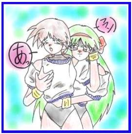
パス、パス！パス、パス！
パス、パス！
グランドにいる仁志に向かって弾を連続発射していく。
しかし、だんだん命中精度も悪くなっていく。
「う〜〜、なんで当たらないのよ！！」
そう言ってる間にも、仁志の手はすでに朋子の体操服の
上着の中で、モゾモゾと動いている。
「むかぁ〜〜〜〜っ！！」
「ちょっと、瞳、何するの・・・」 私は半ばやけくそになって、エアガンの引き金を
「あっ、ダメよ、こんな所で・・・」 引いていく。
俺は、朋子ちゃんの柔らかいナマ乳の感触を パス、パス、パス、パス、カチッ・・・・
むさぼり食う。 「ゲッ、弾切れ！！」
しかし・・・・ こっ、こうなったら、最後の手段よ！！
「ひとしのバカァ〜〜〜！！！」 「ひとしのバカァ〜〜〜！！！」
屋上から聞こえた怒声と共に、俺の視界に高速回転する 私は、持っているエアガンを仁志に向かって投げつける。
黒い物体が飛び込んでくる。 エアガンは、グルグルとブーメランみたいに回転しながら
そう、俺のワルサーだ・・・・ 仁志の顔面にヒットする。
ガン！！ ガン！！
「ふぎゃあ〜〜〜！！」 「ふぎゃあ〜〜〜！！」
鈍い衝撃と共に、顔面に激痛が走る。 仁志の叫び声により、グランドを走っている男子達が、
注：エアガンは、ゴーグルを付けて無い人に向けて 仁志の周りに集まってくる。
撃ってはいけません、もちろん人に向かって投げつけても ザワザワと騒ぎ立てる男子達、その１人が屋上を見上げ
いけません。 私の方を指さす。
そんなことを思いながら、俺は、グランドに大の字に 「天上は、屋上にいるぞ！！」
なって倒れる。 その声を聞いた男子達が、次々と校舎の中に入ってくる。
周りで、ザワザワと声が聞こえるが、俺の意識は、 「しまった、気付かれた！！」
暗黒の闇の中に消えていく・・・ 私は、足下に置いていた麻袋を握りしめ、昇降口の前に
立つ。
＜抜き打ち、おまけシナリオ＞ 「天上〜〜〜〜〜！！」
時は、２０９９年、世界は恐怖の大王アンゴルモアによって、 ドア越しに、男子達の声が聞こえる。
未曾有の危機に瀕していた。 「う〜〜、もうここまで来てる・・・」
だが、その危機に立ち向かう、熱き魂を持った奴等がいる。 「こうなったら！！」
そう・・・ 私は、麻袋の中から発煙筒をとりだし火を付ける。
超（省略） その瞬間、昇降口のドアが開き、男子達がなだれ込んで
ＲＥＩＫＯ １．５ 作：オヤジ くる。
（テーマソング） 「天上、もう逃げられないぞ！！」
狂四郎：ファイヤー、ファイヤー、ファイヤー、燃え上がれ〜 その声を聞くと同時に、私は持っている発煙筒を
（省略） 男子達に投げつける。
狂四郎：なにーっ、わしの美声を省略するとは・・・ 「うわっ、なんだ？」
第２１４回 渚のランデブー（恐怖のマンタルモア） 「ゲホ、ゲホッ」
ナレーター：夏と言えば海！ 男子達は、突然煙に巻かれ、大慌てしている。
この安直な考えから、我等が、狂四郎一家は、海に来ていた。 「今だ！！」
漢：うきゃ〜、海！うみ！！う〜〜み〜〜〜！！ 私は、あたふたしている男子達をかき分けて、
（漢は狂喜乱舞しながら海に飛び込む） 昇降口の中に飛び込む。
英子：こら、漢君！泳ぐ前には、準備体操でしょ！！ しかし、階段には、まだ男子達が残っていた。
漢：えっ、うん・・・ 「もうなんで、こんなにいるのよ！！」
（そう言いながら、漢は海から上がり、英子と準備体操を 私は、もう一本残っている発煙筒に火を付け、
始める） 男子達の中に投げつけ、そのまま男子を尻目に手すりを
狂四郎：青い海、照りつける太陽、白い砂浜、そして、 乗り越え、下の階に飛び降りる。
ピチピチの水着ギャル、海はいいのう！ ＜三階＞
なぁ、ヤギ！！ 「天上、とうとう見つけたぞ！！」
メリー：メェ〜〜 「うわ〜、また来た！！」
小露音：ちょっとジジィ、ＲＥＩＫＯって 三階廊下を、さっき倒したはずの田中と、高田と、
ロボットなんでしょ！塩水に浸けて錆びないの？ 伊沢が走ってくる。
狂四郎：出たな、ツッコミ娘、ＲＥＩＫＯは、ちゃんと 「天上、覚悟しろ！！」
防水仕様にしてある、錆びりゃ〜せん！！ 「この黒い三連星が、お前を成敗してくれる！！」
でも、これ以上ツッコムな、良いボケがうかばん！ 「何よ、ただ地黒なだけじゃない！！」
小露音：そう、まぁそれは良いとして、あんたこの暑い中、 「うるさい！！」
なんでマントつけってんのよ！！ そう言うと三人は、縦一列になり、
（容量節約の為、絵を出しませんが、狂四郎は、マントを 私に突っ込んでくる。
着ています） 「ジェット、ストリーム・・・・」
狂四郎：ふん、黒マントは、わしのトレードマークじゃ！ 「あんた達に、プレゼントあげる・・・」
ちゃんと、夏用のマントを付けておる、ほれ触ってみ！ 私は廊下に目掛けて、パチンコ玉の入った袋を
（そう言われ、小露音は、狂四郎のマントを触ってみる） 投げつける。
小露音：めっ、メッシュ入ってるぅ〜〜！！ 「アタッ・・・・」
狂四郎：羽田さんも、ビックリじゃ！！ ジャラ、ジャラ、ジャラ、ジャラ、ジャラ・・・・
しかし、小娘、貴様も暑苦しいドレスを着とるじゃないか！ ズルッ！！
小露音：ホ〜ッ、ホッホッ！！その点は抜かりはないわ！！ ズベシ！
（そう言いながら、小露音はおもむろにドレスを脱ぎ、 三人は、技の名前を言い終える前に、パチンコ玉に
水着姿になる） 足を取られてスッ転ぶ。
小露音：どう？このナイスバディーは、これで浜辺の男共は 「お約束、トリオね！」
私の美しさに、く・ぎ・づ・け！！ 私は廊下で後頭部を抱えながら、のたうち回る三人を
（小露音は、水着姿で、モデル並にポーズをとる） 一別して、二階に下りる階段を急いで下りる。
狂四郎：ドレスの下に、水着を着てたとは、お前は小学生か！ ＜二階＞
小露音：だまらっしゃい！！ 「ハーッ、ハーッ、何よあいつ等、私が何をしたって
（その時、沖合から来た、クルーザーの先端で 言うのよ」
お嬢様ポーズをとった女性が、叫ぶ） 「てめ〜、俺達をメタくそにしておいて良くそんな事、
ちまき：ホ〜ッホッホッホッ！！赤道院グループの令嬢も 言えるな〜〜！！」
落ちた物ね、こんな庶民臭い所で、海水浴してるなんて！！ ドスの効いた野太い声が、二階廊下に響きわたる。
小露音：あっ、あんたは！ 「ゲッ！！」
ちまき：そう、赤道院グル−プと双璧をなす、極点院グループ 気付くと私の前に、藤田を先頭に男子達が、
の令嬢、極点院 ちまきよ！！ 立ちふさがっている。
ホ〜ッホッホッホッホ〜〜〜〜！！ 「天上、いい加減に観念しろ！！」
狂四郎：うぬぬ、今回は、おまけ程度の話なのに、 藤田の声と共に、男子達が私に飛びかかる。
新キャラを登場させるのか！！ 「もう、こっちに来ないでよ！！」
これ以上キャラ増やして、どうすんじゃ、オヤジ！ 私は、袋からスプレー式の湿布剤をとりだし、
（その時、強烈な爆発音と共に、ちまきの乗ったクルーザー 藤田の顔に吹きかける。
が、爆破される） 「ぐぁ〜〜、目にしみる〜〜〜！！」
ドッカ〜〜ン 藤田は目から涙をボロボロと流しながら廊下を
ちまき：あ〜〜〜れ〜〜〜〜〜 転げ回る。
これから、小露音とお嬢様バトルをするんじゃなかったの？ しかし、他の男子達は、藤田を置いて私に
私の出番、もう終わり？ブク、ブク、ブク・・・・・ 飛びかかろうとしている。
（と言いながら、新キャラ、極点院ちまきは、クルーザー 「くそ〜、藤田の敵討ちだ〜〜！！」
と共に、海の藻屑となっていく） 「ファイヤー！！」
小露音：今のは、一体なんだったのよ！！ 私は、スプレーの噴射口の前に火のついたライターを
狂四郎：どうやら、あの小娘は、やられキャラだった 近づける。
みたいじゃのう。 ボッ、ゴォォォーーー！！
マンタルモア：エ〜イッイッイッイーーーッ！ スプレーから、まるで火炎放射器のような炎が上がる。
この浜辺は、アンゴルモア１０５７将が１人マンタルモアが 注：良い子は絶対にまねしないで下さい。
占拠したエイ！ 「ひぃぃ〜〜熱い〜〜〜！！」
（突然、ちまきの乗ったクルーザーがあった海面から 「うおぉ〜、これじゃあ近づけない！！」
水しぶきが上がり、アンゴルモアの怪人が出てくる） 私はそのままの体勢で、一階に下る階段を駆け下りる。
狂四郎：ぬぅぅ、こんな所にアンゴルモアの怪人がいたとは、 ＜一階＞
漢君、出番じゃぞ！！ 一階廊下に下りた私は立ち止まる。
英子：狂四郎様、漢君は、地元のサーファーにナンパされて、 「天上、この最終防衛ラインは突破させないぞ！！」
ついて行きましたけど・・・ クラス委員長の中沢を先頭に男子達が私の行く手を
狂四郎：何〜〜〜！！ 阻んでいる。
マンタルモア：エーイッイッイッ、ＲＥＩＫＯのいない 「もう、ひつこいわね！！」
貴様等なんか、倒すの簡単だエイ！！ 私は逃げ道を探そうと周りを見回す。
狂四郎：ふむ、仕方がないとりあえず、Ｍ１６でも すると、階段からさっき倒した男子達が下りてくる。
撃っとくか・・・ 「これで袋の鼠だな、もう逃げ道はないぞ！！」
（狂四郎は、どこからともなく、Ｍ１６を取り出し、 「う゛〜〜〜〜っ」
マンタルモアに向かって撃ち出す） 男子達は私の動きを警戒しながら、ジリジリと
パラ、パラ、パラ、パラ 近づいてくる。
マンタルモア：エイ〜〜ッ、ヒーロー物の科学者が、 「とうとう最後の武器を使う時が来たわね・・・」
そんなリアルな武器で、攻撃するなエイ！！ 私は麻袋から、打ち上げ式花火を取り出し、ライターで
（っと言いながらも、マンタルモアは、結構ダメージを 火を付ける。
受けている） 「大回転花火ぃ〜〜〜！！」
狂四郎：なんか、このまま倒せそうじゃのう 私は、火のついた花火を握りしめ腕をグルグルと
漢：ちょっと待った〜〜〜〜！！ 回転させる。
英子：狂四郎様、漢君が、戻ってきました 次々と放たれる火の玉は、周りにいる男子達に
狂四郎：おおっ、ＲＥＩＫＯよ戻ってきたか！！ 直撃していく。
漢：博士、後は、俺に任せとけ！！ （重ね重ね言いますが、良い子はまねしないで下さい。）
（キラーン、漢の歯が光る） （もちろん、大人もですよ。）
小露音：漢君、歯に青海苔、ついてるわよ！ 「駄目だこいつ〜〜〜」
漢：いや〜、さっき、地元もサーファーの兄ちゃんに 「熱い、熱い・・・」
焼きそば、おごって貰ってさ〜、やっぱり可愛い女の子は 「少しは手加減しろよ〜〜〜！！」
得だよな〜、飲み食いに、困らないもん。 「もう、無茶苦茶だ〜〜〜！！」
小露音：そうそう、美人は得よね〜 私は、逃げまどう男子達に花火を向けて追い回す。
私も言い寄る、男のプレゼントの処分で困ちゃう。 パン、パン、パン、パン・・・・・
狂四郎：小娘、ぬしの場合は、ギャクタマねらいじゃろ！ 「フッフッフッ、良くも今まで追い回してくれたわね！」
小露音：何ですって！！ 「ギャァァ〜〜、もう許しでくれ〜〜！！」
マンタルモア：お前等、俺を無視するなエイ！！ 「ダ・メ・よ！！」
小露音：あんた、まだいたの・・・ 調子に乗った私は、花火をさらに振り回す。
マンタルモア：ぐぬぬ〜、もう怒ったエイ！！ しかし・・・・
くらえ〜〜、大津波〜〜！！ プスン・・・・・・
（マンタルモアは、海をバックに大津波を起こす） 「げ〜〜っ、花火が終わったぁ〜〜〜っ！！」
（しかし、それと同時に、漢も叫ぶ） それと共に、男子との形勢が逆転する。
漢：くらえ〜、いきなり、必殺！！ 今まで逃げていた男子達が、振り返りニタニタしながら、
バーニング、フィンガァ〜〜〜〜〜！！！ 私に詰め寄る。
（ＲＥＩＫＯの右手が、光り輝きマンタルモアの腹に、 私は、男子達に満面の笑みを送り。
突き刺さる） 「それでは、皆さん、ごきげんよう〜〜」
グサッ！！ と言い、体を反転し、全速力で男子から逃げる。
マンタルモア：エッ・・・・イ〜〜〜〜〜〜ッ！！ 「みんな、天上を逃がすな！！」
いきなり、必殺技なんて卑怯だエイ！！ 「おう！！」
（っと言いながら、マンタルモアは、大爆発を起こす） 私の後方１０メートルぐらいから、男子が大挙して
ドッカ〜〜〜ン 追いかけてくる。
＜狂四郎がいる砂浜から、少し離れた岩場＞ それを尻目に、私は中庭を突っ切り隣の職員棟に
インゴルモア：くそぉ〜、神馬 狂四郎め、よくも 逃げ込む。
やってくれたな！！ 「天上〜〜どこだ〜〜！！」
（アンゴルモア四重将の１人、インゴルモアは、 中庭から男子達の声が聞こえてくる、ここが見つかるのも
握り拳を握り、狂四郎のいる砂浜を見下ろす） 時間の問題だ、逃げ道を探しキョロキョロと見回すと、
インゴルモア：蘇れ、マンタルモア〜〜！！ 保健室の扉から手招きしてるのが見える。
（インゴルモアは、そう叫びながら、巨大化光線を、 「瞳ちゃんこっちよ・・・」
マンタルモアの亡骸に向かって発射する） 私は、その声に導かれ保健室の中に、逃げ込む。
巨大マンタルモア：エ〜〜イ〜〜〜〜！！ 「ハーッ、ハーッ、助かった〜〜〜！」
小露音：ぎゃぁぁ〜〜、巨大化した〜〜！！ 保健室の中で一息つく私・・・
狂四郎：う〜〜む、なかなかお約束な、展開じゃのう！ すると、保健室にある間仕切りが突然開き、そこから
しかし、絵が無いので、迫力が伝わりにくいのう・・・ 白衣を着た小学生くらいの女の子が飛び出してくる。
英子：容量節約のためです。 「よ〜こそ、愛と、悦楽の保健室へ！！」
狂四郎：寂しいのう、わし等の売りは、 「私は、この保健室の主！！」
絵による情報提供型ストーリーなのに・・・ 「しんま〜〜」（右手３回転）
（その間にも、巨大化したマンタルモアが、浜辺で、 「うきょ〜〜〜！！」（左手を振り上げジャンプ）
大暴れをしている） でっ、でた〜、このテンションの高い女の子は、
漢：博士、あれ何とかならないのか？ うちの学校の保険医をやっている
狂四郎：うむ、そうじゃのう、水中戦アクアギアの出番も 神馬 右京（しんま うきょう）先生だ。
ない事じゃし、折角、絵の発注したのじゃが・・・ 見た目は小学生だが、れっきとした成人だ、何でも
狂四郎：よ〜〜し！こんな時には、お約束の〜〜〜 若返りの薬を作って、それを自ら飲んでこんな姿に
カモーン、超弩級ロボ、グレート・魔・神馬ぁ〜〜！！ なったしまったという噂もある、いかにも妖しげな
（狂四郎は、パチンと指を鳴らす） 先生だ。
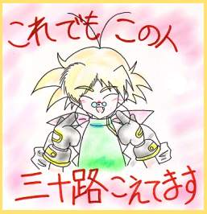
漢：おおう、やっぱり、巨大怪人には、巨大ロボだよな〜！！し〜〜〜〜〜〜ん・・・・
（しかし、待てど暮らせど、巨大ロボは、来ない）
英子：狂四郎様、グレート・魔・神馬ぁーも、容量節約の為、
出動は、出来ません・・・
狂四郎：何〜、角さんの奴、久しぶりにロボット書いて
よろこんどったのに、これも没なのか！！
小露音：どうすんのよ！これじゃあ八方塞がりじゃない！！
狂四郎：仕方がない、英子君あれを・・・
英子：はい 「瞳ちゃん、妖しげとは心外ね、ちょっとだけ
（英子は、ビニールバックからスイッチを取り出す） ミステリアスな女って言って！」
小露音：ぎゃぁぁ〜、そのドクロマークのスイッチは〜！！ 「先生、人の思っている事にツッコミ入れないでよ！」
狂四郎：サテライトビーム、発射〜〜！！ 「いや〜、親類の中に人の心が読める子がいるもんで」
ポチッとな！！ 「あんたは、違うでしょ！！」
（狂四郎が、スイッチを押すと同時に、天から光の柱が 「あっ、そう言えば先生さっき私の事、瞳って言わな
降りてくる） かった？」
ビッカァ〜〜〜！！ 「えっ！！」
巨大マンタルモア：エイ〜〜〜！！ 「そんな事、言ってないわよ！ひと・・・し君」
海水浴客：ギャァァ〜〜〜！！ 「何よ、その間は！！」
海の魚：うお〜〜〜〜！！ そう言いながら私は先生のほっぺたをつねる。
（サテライトビームにより、海は沸騰し、海岸は炎に 「いた、いたたた、私は何も知らないわよ〜〜」
包まれる） そう言ってる先生の目は、泳いでいる。
狂四郎：う〜〜む、爽快、爽快！！ 「知ってる事、全て話さないと、生き地獄味わう事に
小露音：ぎゃぁぁ〜！！またもや、大量虐殺ぅ〜！！ なるわよ！！」
漢：俺、主役なのに、見せ場が少ない・・・ 「ひぃぃー、瞳ちゃん目がマジになってるわよ〜〜」
小露音：それより、核爆弾は？ 私は先生の両頬をつねり、そのまま思いっ切り引っ張る。
メリー：それなら、私が処理しておきました。 「話してくれるわよね〜〜〜」
小露音：メリ−、なんであんたがそんな事できんのよ！ 「はまひまふぅ〜（話ます〜）」
メリー：昔、フランス外人部隊の、 先生は、保健室の奥に私を連れていき、椅子とお茶を出し
爆弾処理班に、いたもんですから・・・ 私に座るように促す。
小露音：何、言ってんのよ、あんたは、赤道院グループ、 「あれはそう、昼休みの時だったかしら・・・」
アルプスラボが、研究開発した、バイオヤギって、 先生は、お茶の湯気でメガネが曇るのを気にしながら
設定じゃなかったの！！ ゆっくり話し出す。
メリー：私には、解りかねますが・・・ 「私は、食堂でＢランチ、メンチかつ、みそ汁、
小露音：もう嫌！こんないい加減な設定の話！！ キャベツの千切りがついて２７０円と、うどん１５０円
（絶叫している小露音をよそに、狂四郎は、夕日の沈む を食べて、ミックスジュースを飲みながら、一階廊下を
海を、指さす） 歩いていたら、階段からあなた達が転げ落ちて来るのが、
狂四郎：漢君、アンゴルモアの手下にやられた一般 見えたの」
海水浴客の代わりに、あの夕日に誓おう。 「あっ、そうそう、瞳ちゃん三時のおやつにとっといた
狂四郎：敵は、絶対討ってやる！！ 苺大福、食べる？」
漢：おう、出番が少ない、影の薄い主人公だけど、 「そんな事、どうでもいいから早く話しなさい！！」
アンゴルモアは、絶対倒すぞ！！ 私は、先生のこめかみに、握り拳を当てて、ぐりぐりと
狂四郎：さあ、夕日に向かって走ろう！！ する。
漢：おう！！ 「あうう、痛い、痛い・・・」
（２人は、海に沈む夕日に向かって走って行く） そして先生は、観念して話を続ける。
狂四郎：あはははは・・・ブッブクブクブク・・・ 「私は、廊下に横たわるあなた達を見て、保険医として
漢：あはははは・・・ブッブクブクブク・・・ あなた達を助けなきゃ、と思ったわ、でも・・・」
（そのまま２人は、海の底へと消えていく） 「でも、なんなのよ！！」
小露音：ダメだこりゃ！！ 「私の中にある科学者の心が囁くの、『こんな所に
ナレーター：アンゴルモア１０５７将の１人、マンタルモアを モルモットがいるわ』って、そう私はつい先日完成させた
倒したＲＥＩＫＯ残る怪人８４３人、いけいけ狂四郎、 発明品の実験台を探してたの・・・」
がんばれＲＥＩＫＯ、明日の朝日に、マインドインだ！！ 「そして、私はとうとう、その発明品をあなた達に
＜次回予告＞ 使ったの、人体、いや宇宙、いや精神の神秘を
日本の下町で、アンゴルモアの怪人出現、 追求するために・・・」
出動だＲＥＩＫＯ！江戸っ子達を守るのだ！下町人情の香りを 「まさか、その発明品って・・・・」
漂わせ、 先生は、コクリと頷きロッカーの奥から、黒い箱のような
＜次回＞ 浴場で、欲情？銭湯で、戦闘？！ 物を取り出す。
（恐怖の、フルーツ牛乳モア）に、マインドインだ！！ その箱には、２本のゴムホースがついていて、両端に
小露音：ホントにやるの？ 調理用ボールみたいな物が取り付けられている。
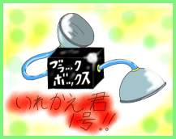
オヤジ：わいが決める事じゃないけん、わからん！それに今回で・・・・・ヘップシ！！
小露音：今回で、何よ！！
オヤジ：・・・・・まっ、気にすんな！
小露音：なんか無茶苦茶、気になるじゃない、
あんたなんか隠してるでしょう、しゃべりなさい！！
オヤジ：な・い・しょ！！ しかも、この妖しい物をさらに妖しくさせているのは、
じゃあ、またな〜〜〜！！ その黒い箱の中央に白いペンキで大きくブラックボックス
（おまけシナリオ、おしまい） と書いてあるからだ、まさに妖しさ大爆発だ！
・・・・・・・・ 「ねぇ、これって・・・」
・・・・・・ 「そう、これが私の発明した、いれかえ君１号よ！！」
「・・・・・・！！」 「ギャ〜〜、お約束すぎるぅ〜〜〜！！」
「はっ、何だったんだ、今の夢は・・・」 「やっぱり、うちは科学者ネタで入れ替えやらなきゃ！」
「きゃ、どうしたの瞳？」 「何、のん気な事、言ってるのよ！！」
「えっ」 「全部、先生が仕組んだ事だったのね！！」
突然、飛び起きた、俺にビックリする朋子ちゃん。 そう言って、私は先生の首を絞める。
どうやら、俺は、朋子ちゃんの膝枕で寝てた様だ・・・ 「苦しい、くるひい、瞳ちゃん、死ぬ、しむ〜〜っ」
膝枕？！くそ〜、あのまま寝てたら、朋子ちゃんの、 その時、保健室にある骨格標本の目が赤く光る。
太股の感触をもっと味わえたのに・・・ ビーッ、ビーッ、ビーッ、ビーッ・・・・
「ちくしょぉ〜〜〜！！」 「瞳ちゃん、誰か来たみたいよ！」
「ひっ、瞳、大丈夫？保健室、行く？」 「えっ、クラスの男子達に私の居場所がバレた？」
「保健室・・・・」 「とりあえず、瞳ちゃんはそこのベットの下に隠れて！」
保健室・・・ベット・・・朋子ちゃんと２人・・・ 私は先生に言われるままに、ベットの下に潜り込んだ。
俺の脳裏に、様々な、邪な、考えが浮かぶ・・・ しかし、この先生、保健室にこんな仕掛けなんかして、
「朋子ちゃん、保健室、行こう！」 他にもなんか、してるんじゃないでしょうね。
「元気いっぱいで、言わないでよ・・・・」 「そんな〜、プールに巨大ロボットなんか隠して
「やっぱり、瞳、おかしいわよ・・・」 ないわよ〜〜〜」
「おかしいかな〜、アハハハハッ」 「ただちょと、校舎が巨大ロボ・・・・ゲフ、ゲフ！」
「思いっきり、おかしいわよ！」 「っと言うわけで、何もしてないわよ・・・」
＜保健室＞ 絶対なんかやってる、しかもまた心読んでるし・・・
「瞳、ついたわよ！！」 ホントに変な先生だ、そう思っているとガラガラと
そう言うと、朋子ちゃんは、ガラガラと、保健室の扉を開く。 保健室のドアが開く音がする。
そこには、白衣を着た小学生ぐらいの女の子が不動立ちで、 男子達が、私を追っかけてきたのかしら・・・
いきなり叫び出す。 そこへ、先生の大きな声が響く。
「よ〜こそ、愛と、悦楽の保健室へ！！」 「よ〜こそ、愛と、悦楽の保健室へ！！」
「私は、この保健室の主！！」 「私は、この保健室の主！！」
「しんま〜〜」（右手３回転） 「しんま〜〜」
「うきょ〜〜〜！！」（左手を振り上げ、ジャンプ） 「うきょ〜〜〜！！」
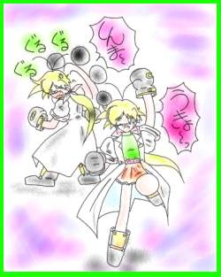
あの先生、保健室に人が入ってくるたんびに、あれ言うの・・・
呆気にとられる私をよそに、
「ははは・・・」
っと、乾いた笑い声が保健室にこだまする。
どうも先生の、テンションについていってないようだ。
でも、声からすると、保健室に入ってきたのは、
２人の女生徒のようだ。
とりあえず、ピンチは回避できたみたいね・・・・
フフフ、今頃男子達は、躍起になって私を、
「ははは・・・・」 探してるんでしょうね！
朋子ちゃんが笑う。 まさか、私が保健室のベットの下に隠れているとは、
「ははは・・・・」 思っても見ないでしょうね。
もう笑う事しかできない、この女の子、神馬 右京 でも、これからどうしよう・・・
（しんま うきょう）先生の、テンションについていけない。 そんなことを考えていると、保健室の入り口から会話が
「でっ、２人共、どうしたの？」 聞こえてくる。
「あっ、えっと〜、さっき瞳が、鉄砲を頭にぶつけられて、 「・・・・・・」
気を失ったんです」 「・・・・・・・」
「だから、ちょっと、保健室で休ませてもらおうと思って」 何か話しているようだけど、声が小さすぎて
「そう、じゃあ、そこのベット使っていいわよ！」 聞き取りにくい、すると先生が、
「私は、ちょっと用事があって、この部屋空けるけど、 「私、ちょっと用事があって、この部屋空けるけど
いいわよね！」 いいわよね！」
そう言うと、右京先生は、スタスタと保健室から出ていく。 なにぃ〜〜〜！！
なんて無責任な保険医だ。 この私を置いて、先生どっかいっちゃうの？
しかし、これは朋子ちゃんと２人きりになるチャーンス！！ 私はこのまま、ベットの下で、この女生徒達を
「それじゃあ、瞳は、そこのベットで、横になってなよっ」 やりすごせって言うの？
朋子ちゃんは、俺をベットの方に連れていく。 あぅぅー、気まずい、私こんな覗き見たいな事するの
俺は、朋子ちゃんに言われるがままに、ベットに横になる。 嫌なのよ〜〜〜〜
「瞳、大丈夫？」 しかし、このままベットから出ていっても、この体じゃ、
「今日は、いろんな事があって、きっと疲れてんのね」 変態覗き犯罪者として、警察に突き出されるのが、
朋子ちゃんは、心配そうに、俺の顔をのぞき込む オチだろう・・・・・
潤んだ瞳、瑞々しい唇、サラサラとした髪、それが俺の ギシ、ギシ・・・・
目の前に飛び込み、俺の理性は、一気にフッ飛ぶ。 隣から、ベットのきしむ音が聞こえる。
「朋子・・・」 女生徒の１人が、ベットを使っているようだ。
俺の両腕は、無意識の内に、朋子ちゃんの首にからみつく。 あ〜、どうしよう、このままずっとこの状態でいろって
「瞳？」 言うの？
朋子ちゃんは、ちょっとビックリしてるようだ。 そんな事を思っていると、床のタイルが一つ浮き上がる。
しかし、もう止められない、 へ？
この高鳴る気持ちを抑えられない。 『呼ばれて、飛び出て、ジャジャジャ、ジャーン！』
チュッ・・・ そんな懐かしのフレーズを言いながら、床にあいた穴から
軽いキス、朋子ちゃんの柔らかい唇の感触が、 右京先生が頭を出す。
俺の唇越しに伝わる。 『瞳ちゃん、１人で寂しかった？』
甘いキッス・・・・ そう言うと、先生は穴から出てきて私の横にくる。
よく、キッスの味は、レモンの味とか言うが、 『先生、何よその穴は・・・』
それに勝るとも劣らない、甘美な感覚が俺を襲う。 『えっ、これは、緊急避難用のハッチよ！』
ドキドキと、胸の鼓動が早まる・・・ 『なんで、ここにそんな物がいるのよ！』
脳がしびれる・・・ 『そりゃ〜、校舎がへん・・・・ゲホゲホッ・・・』
『き、気にしないで！』
無茶苦茶、気になる・・・
『しかしよっかたわ、その穴使えば、ここから
抜け出せる！』
『あっ残念だけど、この穴一方通行だから使えないわよ』
えっ、私は先生が出てきた床を触ってみる。
それは、まるで、昔あったロボットアニメのミサイル
発射口のように継ぎ目なく穴が塞がっている。
爪を立てようにも、その爪が入る隙間もない・・・
『どうすんのよ、この右分け触覚！！』
『あぅ、気にしてるのに・・・』
もう、どうすりゃいいのよ、この狭いベットの下に２人も
人が入って、しかも隣じゃ女生徒２人いるって
ガタン！！ 言うのに・・・・
ガタガタ・・・・ ガタガタ・・・・
朋子ちゃんは、目を見開きビックリしたように俺に言う。 ん？隣のベットが騒がしいわね、なにやってんのかしら？
「瞳、いきなり何するの！！」 「・・・、いきなり何するの！！」
朋子ちゃんは、俺の腕をふりほどき、後ずさりをする。 ん？声が聞こえる・・・
「朋子、私の事、嫌い？」 「・・・・、私の事、嫌い？」
自分でも、何を言ってるのか解らない。 えっ、何、言ってるの？
この、アブノーマルな状況、２人だけの空間、 良く聞き取れないけど、これってまさか・・・
そして、俺の男としての気持ち、これが混ざり合い 『いや〜、お隣さんは、なんか燃えてますね〜』
まともな思考が出来なくなっていく。 『なに、おっさんみたいな事いってんのよ！！』
だだ、目に映るのは、朋子ちゃんの顔だけ、 『隣にいる子達って、女の子なんでしょ、これって・・・』
今の俺が、瞳の、女の、体だとしても、この朋子ちゃんの 考えただけで、顔が真っ赤になる。
愛らしい顔を見れば、誰だってこんな気持ちになるだろう。 『あら、瞳ちゃん純情なのね、こんな事、女子校だったら、
そんな事を考えながら、朋子ちゃんの様子をうかがう。 良くある事じゃない』
俺の問いにとまどう朋子ちゃん・・・ 『うちは、共学でしょ！！』
「私、瞳の事好きよ、でも、こんなの違うと思うの」 「・・・好きよ、でも、こんなの違うと思うの」
「瞳の好きと、私の好きって言うの、違うと思うの・・・」 『えっ』
朋子ちゃんは、顔を真っ赤にし、言葉を詰まらせ 『何って？』
ながら答える。 私達２人の、耳はダンボの様になる。
「本当にそうなの、朋子の言う好きと、私の好きって言うの、 「・・・、好きと、私の好きって言うの
どこが違うの？」 どこが違うの？」
「私は同じと思う、人を想う気持ちは、男も女も 「私は同じと思う、人を想う気持ちは、男も女も
変わらないと思うから・・・」 変わらないと思うから・・」
俺はそう言いながら、朋子ちゃんに近づき、 う〜〜ん
右手で軽く髪をなでる。 なんか論点が、ずれてると思うけど・・・・
「あっ・・・・」 「あっ・・・・」
朋子ちゃんの甘い声と共に、頭の中で何かがはじける。 隣から甘い吐息が漏れる。
「朋子ちゃん、好きだぁ〜〜〜！！」 一体、隣のベットで何が起こっているの？
俺はそのまま、朋子ちゃんをベットに押し倒す。 気になる、でも、ここからじゃ見えない・・・
「ちょっと、瞳、ひとみ〜〜〜！！」 『ん？』
しかし、その声は俺には届いてない。 気付くと、隣にいた先生が、ベットの下から頭を出して、
押し倒した朋子ちゃんの胸が、俺の胸にあったっている。 隣のベットを覗こうとしている。
何とも言えない感触が、俺を襲う。 パカッ！！
「瞳、やめてよ〜」 『いった〜、なにすんのよ瞳ちゃん、見つかったら 「やめて・・・」 どうするの！！』
朋子ちゃんが、瞳に涙をためながら俺に懇願する。 『それは、先生の事じゃない！！』
しかし、それが、俺の中の野獣を呼び覚ます。 『頭出したら、見つかっちゃうでしょ！！』
「朋子ちゃん！！」 『でも、気になるじゃない、瞳ちゃんも見たいでしょ！』
俺は、両手で朋子ちゃんの胸を押し上げる。 『あ〜〜う〜〜〜』
柔らかい感触が、俺の両手のひらに伝わる。 『ほら、ほら、見たいんでしょ？』
「ううん、やめて・・・」 先生は、そう言いながら私のほっぺたを指でつつく。
朋子ちゃんは、俺から逃げようともがくが、俺が上に 『とにかくここで、じっとしてる！！』
乗っているので、逃げられない。 私は、先生の頭を左手で押さえ込む。
俺は、それを尻目に右手をゆっくりと下に移動させる。 『むぎゅう』
すべすべした太股に届いた俺の手のひらを、 『自分で、擬音を言わない！！』
次は、ジリジリと上へ移動させる。 すると、隣からまた吐息が漏れる。
「あっ、ああん・・・」 「あっ、ああん・・・」
朋子ちゃんの甘い吐息が、再び漏れる。 『ちょっと、瞳ちゃん、痛い、痛い・・・』
「もうやめて・・・」 「もうやめて・・・」
「おねがい・・・」 「おねがい・・・」
小動物の様に震えながら、朋子ちゃんは俺に 私は、左手で押さえ込んでいる先生の事など忘れて、
懇願する。 隣のベットからする声に聞き入る。
「だぁめ・・・」 「だぁめ・・・」
俺は、そう言い唇で、朋子ちゃんの唇を塞ぐ。 知らず知らずの内に、私の手に力が入る・・・
「むぐっ」 「むぐっ」
「んっ、ううんうん」 「んっ、ううんうん」
朋子ちゃんは、必死に顔を左右に振り、俺の唇から 隣のベットから聞こえる、甘い声、シーツが摩擦する音、
逃れようとする。 それらが、私の頭の中で、様々な妄想を起こし、
あまりに嫌がる朋子ちゃんを見かねて、唇を離してやる。 私の頭は、どんどん真っ白になっていく。
「くっ、ハァーッハァーッハァーッ」 「くっ、ハァーッハァーッハァーッ」
朋子ちゃんの息が上がる、キスの間、 ２人の甘い息づかいを聞き、私も興奮していくのが解る。
ずっと息を止めてたみたいだ。 なに、この感覚・・・
かわいい・・・・・ 頭に血が上って、何も考えられない・・・
この子を、無茶苦茶にしたい。 その時、私は股間に妙な違和感を感じる・・・
そう言う思いが俺を襲う、もう止められない。 『！！』
誰も、俺すらも、この気持ちを止められない。 まさか、まさか、まさか、、これって・・・
「朋子ちゃん・・・」 『たっ、たっ、たっ、たたたた・・・・』
俺は、朋子ちゃんに優しく囁き、太股に添えていた右手を、 私に起こった、男特有の現象に、私はパニックを、
ゆっくり太股の内側に移動させていく。 起こしてしまう。
「ん・・・」 『どっどうしたの、瞳ちゃん？』
朋子ちゃんは、もう何も言わない、半ば諦めているのか、 『私、私、私・・・たっ立ってる〜〜！！』
それとも感じているのか、どっちにしても都合がいい。 私は、いても、立っても、いられなくなり、ベットを
その時、隣のベットから、男の絶叫が聞こえると同時に、 押しのけ、保健室を出ていこうとする。
ガタンとベットがひっくり返る。 しかし、その時、私の目に映った物を、認識した時、
俺は、そのベットの下から出てきた男を見て、 私は驚愕した。
今まで高ぶっていた気持ちは、一気に覚めてしまった。 そう、隣のベットで、チチクリあっていたのは、なんと
そう、隣のベットにいたのは、俺、 私と朋子、いや、私の体の仁志と朋子だったのだ。
いやっ、俺になった瞳だっだのだ。 見つけた、とうとう見つけた・・・
「ひっ、ひっ、ひとし〜〜、こんな所にいたか！！」 「ひっ、ひっ、ひとし〜〜、こんな所にいたか！！」
突然の瞳の出現により、呆然としていた俺は、 突然ベットの下から出てきた、私に目を丸くしていた
瞳の叫び声だ我に返る。 仁志と朋子は、私の声を聞き、正気に戻る。
「えっ、仁志君！！」 「えっ、仁志君！」
「ゲッ、瞳がなんでここにいるんだ！！」 「ゲッ、瞳がなんでここにいるんだ！！」
俺は、思っている疑問を瞳にぶつけたが、 ２人は、慌てて体を離すが、もう遅い。
瞳は、それを無視し、朋子ちゃんと抱き合ってる俺を、 今までの事を、ベットの下で一部始終聞いていた、
鬼の形相で見ている。 私は、全てを知った。
それに気付いた朋子ちゃんは、俺を自分の体から 私になった仁志は、私と朋子が友達だと言う事を
突き放す。 利用して、朋子にスケベな事をしていたのだ。
「仁志君、これは違うの・・・」 「仁志君、これは違うの・・・」
「そうそう、違うんだ瞳、誤解なんだ・・・」 「そうそう、違うんだ瞳、誤解なんだ・・・」
言い訳をしてみるが、瞳の耳には届いてない。 言い訳をする２人を見てると、よけいに腹が立つ！
「殺す、コロス、ころす、ころ〜〜〜す！！！」 「殺す、コロス、ころす、ころ〜〜〜す！！！」
「あんたを殺して、私もしぬぅ〜〜〜〜！！！」 「あんたを殺して、私もしぬぅ〜〜〜〜！！！」
自分の顔から血の気が引くのが解る。 私の中で、理性のたがが、外れる。
そんな俺を尻目に、鬼神と化した瞳は、 顔面、蒼白になる２人・・・・
俺に殴りかかろうとする。 しかし、私は、仁志の顔面に、鉄拳を打ち込むために、
マジだ・・・、俺は、死を覚悟した。 右腕を、大きく振りかぶる。
「超殺人拳、ぐりぐりパァーン・・・」 「超殺人拳、ぐりぐりパァーン・・・」
しかし、バチバチバチと言う音と共に、 バチ、バチ、バチ・・・・
瞳の動きが止まった事に気付く。 私は背中に強烈な激痛を感じると、後ろを振り返る。
驚いて、後ろを振り返る瞳の、視線を追うと、 そこには、スタンガンを持った右京先生が、
そこには、スタンガンを持った右京先生が、 ニコニコしながら立っていた。
ニコニコしながら立っていた。 そう、私は、後ろから先生にスタンガンを
そう、俺のピンチを救ったのは、右京先生だったのだ。 押し当てられたのだ。
「はいはいっ、瞳ちゃん暴力は駄目よ！」 「はいはいっ、瞳ちゃん暴力は駄目よ！」
右京先生が、そう言うと、瞳は白目をむいて、 そう言うのが聞こえるや否や、私の意識は、
床にバッタリと倒れる。 暗闇の中に沈んでいく。
「きゃぁぁ〜〜、仁志君、大丈夫！！」 （瞳ちゃん、サイト終了）
倒れ込んだ瞳の所に、朋子ちゃんが近寄る。
しかし、俺は、右京先生のおかげで命拾いした。
「仁志君、危機一髪だったわね！」
そう言いながら、右京先生は俺に近づいてくる。
「えっ、先生なんで俺が、仁志って解ってるんだ？」
「私は、何でも知っているのよ！」
「だって、私が２人を入れ替えたんだもん！」
先生は、そう言うと持っているスタンガンを、
俺に押し当てる。
バチバチバチと言う音と、痺れるような感覚が、
俺を襲い、そのまま俺は意識を失ってしまう。
（仁志サイト、終了）
＜神の視点＞
右京はとりあえず、教室で起こった、”天上、暴走事件”の真相を男子達に適当に話して、事態を納めた。
そして、しばらくたった・・・・・
保健室のベットに横たわる、仁志と瞳ちゃん、それを心配そうに、のぞき込む朋子ちゃん。
「先生、一体、２人に何があったの？」
「今日の２人、おかしかったもん！」
朋子ちゃんは、振り返ると、後ろにいる右京に近づく。
「う〜〜〜んと、ねぇ〜〜〜〜〜」
右京は、顎に人差し指を添えて、しばらく考え込むと、意を決したように話し出す。
「あのね、実は、カクカクシカジカ、っと言う事なのよ・・・」
「えっ、仁志君と瞳は、先生の作った、入れ替え君１号で、心を入れ替えられていたなんて・・・」
「朋子ちゃん、なんで、カクカクシカジカで、そこまで解るのよ！！」
「もうっ、これは展開を早くする、常套手段でしょ、いちいちツッコまないでよ、先生！！」
「一応、お約束なんで、ツッコンで見ました」
「さて、これから２人をどうするかよねぇ〜〜〜」
そう言いながら、右京は腕組みをして、ベットの周りを動物園のクマの様にウロウロする。
「どうするって、先生の作った入れ替え君１号を、もう一回使って、２人を元に戻せばいいだけじゃないんですか？」
「ダメよ〜〜、それで、チャンチャンっだたら、オチにならないわよ〜〜」
「オチって・・・」
右京の言動に一抹の不安を覚える、朋子ちゃんだった。
「あっ、そうだ！このまま２人を階段の下まで持っていって、夢オチで終わらせましょう、これだといかにもお約束だし！」
「我ながら、ナイスアイデア！！」
右京は、嬉しそうに手をポンと叩く。
『いやダメじゃ！そのオチは他で使おうと、思っとるから、今回はパスじゃ！！』
「ふえっ、朋子ちゃん、今なんか言った？」
「えっ、何も言って無いですけど、どうかしたんですか？」
「いやぁ〜、今、変な方言で、オチのダメ出しされたような気がして・・・」
「先生、それより早く２人を元に戻した方がいいんじゃないんですか？」
「う〜〜んそうね、じゃっ、朋子ちゃん、この入れ替え君１号で２人を元に戻しといて！」
右京は、保健室の奥から、入れ替え君１号を持ってきて、朋子ちゃんに手渡す。
「えっ、私がやるんですか？」
「なに、簡単な事よ、その半球状のヘルメットを、２人にかぶせればいいだけよ！！」
「先生は？」
「私は、ちょっと上と話してくるから、後はよろしくね！」
右京は手をヒラヒラ振りながら、保健室の奥に消えていく。
上って誰？と、朋子ちゃんは思ったが、深く追求すると、ドツボにはまる事になると思い、右京に言われたように、
入れ替え君１号を２人の頭にセットする。
「これでいいのかなぁ〜？」
「しかし、普通、こういう機械って、スイッチとかがいっぱいあったりするのに、何も無いなぁ〜」
入れ替え君１号をセットした、朋子ちゃんは、仁志と瞳ちゃんと入れ替え君１号を、キョロキョロと見回す。
しかし、２人と入れ替え君１号にこれといって変化は見られない。
「せんせ〜〜、何も、起こりませんよぉ〜〜〜〜」
すると、保健室の奥から、右京の声が聞こえる。
「あっ、そうそう、入れ替え君１号をセットしても、呪文を言わないと、ブラックボックスの中にいる小人さんに・・・・
・・・・ゲホゲホッ」
「・・・とりあえず、このメモ読んで！」
「そしたら、中の小人さん・・・じゃあ無くて、入れ替え君１号が動いてくれると思うから・・・」
その声と共に、ヒラヒラとメモ用紙が飛んでくる。
「先生、さっき言った小人さんって・・・・」
「あっ、そんな事を気にしちゃダメよ、世の中には、科学や、人の常識なんかで計り知れない事があるから！！」
「とりあえず、メモ読んでね！！」
朋子ちゃんは、この人は、私と違う世界の人なんだっと思い、とりあえず右京のメモに目を通す事にした。
「・・・・・・・・えっ！！」
朋子ちゃんは、右京から貰ったメモを読んで目を丸くする。
「こんな恥ずかしい事、言うの？」
しかし、これ以上、右京に何を聞いても訳の解らない事を言われるだけだし、２人を元に戻さないとならないので、
朋子ちゃんは仕方なくメモを読み上げる。
「ピピルマ、ピピルマ、プリリンパ！」
「パパレホ、パパレホ、ドリミンパ！」
「精神交換で、入れ替われ〜〜〜〜！！」
・・・・・・・ポッ！！
「きゃぁ〜、はずかしい〜〜、なんで高校生にもなって、こんな恥ずかしい呪文を言わなくちゃいけないの〜〜〜！！」
赤面する朋子ちゃんをよそに、入れ替え君１号のブラックボックスが、カタカタと動き出す。
「やったぁ〜、あの呪文がきいたのね！」
入れ替え君１号を真剣な眼差しで見つめる朋子ちゃん、それが解るかのように、ブラックボックスの動きも加速していく。
そして・・・・・
「うぃ〜〜っ、入れ替え、成功やでぇ〜〜〜」
っと、野太い声が発せられると同時に、ブラックボックスの動きの止まる。
「今のおっさん臭い声は何・・・・まさか小人？」
っと、朋子ちゃんは思ったのだが、なんだか恐いので、これ以上、ツッコムのはやめておく事にした。
すると・・・
「うっ、ううん・・・・」
っと言う声と共に、仁志の目がゆっくり開いていく。
「仁志君、気がついたのね！」
朋子ちゃんは小走りで、仁志の寝ているベットの方へ近づいていく。
ぼ〜〜〜っと、朋子ちゃんを見つめる仁志・・・
しばらくして、仁志は自分の体を確かめるように、体をペタペタと触る。
その様子を見て、朋子ちゃんは心配そうに尋ねる。
「ねぇ、仁志君、ちゃんと元に戻ってる？」
仁志に、詰め寄る朋子ちゃん、だが・・・・・
「何これ〜〜〜〜、仁志の体のままじゃない！！」
「えっ！」
目を丸くする朋子ちゃん、そこに仁志が朋子ちゃんに抱きつく。
「うえ〜〜〜ん、朋子〜、これから私、どうしよう〜〜〜」
「えっ、ちょっ、ちょっと・・・・・」
朋子ちゃんは、何がなんだか解らずに、仁志のなすがままになっている。
「本当に、あなた、瞳なの？」
パニックを起こしそうな精神を押さえ、朋子ちゃんは仁志に尋ねる。
「うん、私、瞳よ！」
「朋子、こんな体でも、友達でいてくれるわよね？」
「えっ・・・・、うん」
おそるおそる、そう答える朋子ちゃんに、仁志は、嬉しそうに朋子ちゃんの胸に顔を埋め、
「ありがとう、朋子！」
「私達の友情は永遠よね！！」
っと言い、仁志は、朋子ちゃんの胸の中で、顔を左右に振る。
「あっ、ちょっと、瞳、くすぐったいよぉ〜〜」
しかし、仁志は、顔を振るのをやめない。
プルプル
プルプル
「あん、瞳・・・・・」
朋子ちゃんから、甘い吐息が漏れる。
「朋子ちゃん・・・」
プルプル
次第に、仁志の顔が緩んでいく。
「うへへ、やわらけ〜〜〜〜」
その時、仁志の肩を何者かが掴む。
「いいご身分ね、瞳ちゃん・・・・」
ドスの効いた、高い声を耳にし、仁志はおそるおそる、後ろを振り向く。
「ゲッ、瞳！！」
「気がついたのか！！！」
顔面蒼白になる仁志に向かって、瞳ちゃんの鉄拳が飛ぶ。
ブァキ〜〜〜〜〜〜〜〜〜〜〜〜〜ッ！！！
っという音と共に、仁志の体は宙を舞い、保健室の壁に叩きつけられる。
「えっ、一体、何が、どうなってんの？」
事態が飲み込めず、朋子ちゃんは、２人の顔をキョロキョロ見回す。
「朋子、心配かけたわね、私が本物の、入江 瞳よ！」
「じゃあ、２人はちゃんと元に戻ってたの？」
「そうよ、なのに、あのバカ仁志が、あんな演技して、朋子にスケベな事しようとしてたのよ！！」
「が〜〜〜〜ん、そうだったの・・・・」
仁志に騙されてショックを受ける朋子ちゃん、しかしそこに、さっきまで倒れていた仁志がやってくる。
「朋子、騙されちゃ、ダメよ、そいつが仁志なのよ！！」
「えっ！」
さらなる仁志の言動で、困惑する朋子ちゃん。
しかし、その朋子ちゃんをよそに、仁志に瞳ちゃんの鉄拳が飛ぶ。
グシャッ！！
「ぐげっ！！」
「まだ言うか、バカ仁志！！」
「いっぺん、地獄見せた方がいいみたいね！」
瞳ちゃんは、指をボキボキ鳴らしながら、仁志ににじり寄る。
「あっ、ちょっと、じょうだん、冗談だよ、瞳ちゃん・・・・」
仁志は、顔を引きつらせながら、必死に言い訳するが、その声は、怒りのオーラをまとった瞳ちゃんには届いてない。
「問答無用、パーンチ！！」
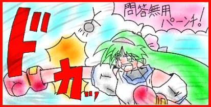
ドカッ！
「ふげっ！」
「自業自得、キィーーークッ！！」
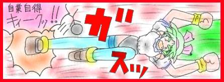
ガスッ
「ほげっ」
「あと、恨みの、おまけ百烈け〜〜〜ん！！」
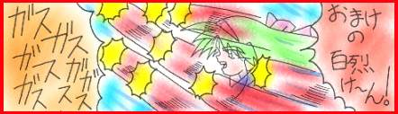
ガス、ガス、ガス、ガス、ガス、ガス・・・・・・
「ぶ、ぶ、ぶ、ぶ、ぶ、ぶ・・・・・・」
「そして、トドメは、因果応報、波ぁ〜〜〜〜〜！！」
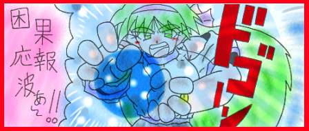
ドゴーン
「はぶあ〜〜〜〜」
瞳ちゃんの必殺コンボが仁志に炸裂し、仁志は空の彼方に、ぶっとばされる。
「あ〜〜〜、スッキリした！」
「さっ、朋子、帰ろ！！」
「えっ」
目の前で行われた殺人ショーを見て固まっていた、朋子ちゃんは、瞳ちゃんの声を聞き、正気に戻る。
「あっ、瞳、仁志君あんなに殴って大丈夫なの？」
「平気よ、あいつあれぐらいじゃ、死なないから、それより早く帰ろ！！」
「えっ、うん・・・・」
こうして、２人は、保健室を後にする。
（おしまい）
＜マルチエンディングもどき＞
（右京エンド）
数分後・・・・・
保健室の奥から、プラカードを持った右京が出てくる。
「お待たせしました、長い会議により、決定した、オチを発表します！」
勢い良く飛び出してきた右京だが、保健室には誰もいない・・・・
「なに、なに、もしかして、私達がオチの相談してる間に、なし崩しに終わっちゃったって事？」
「が〜〜〜〜〜〜〜〜〜〜〜〜〜〜〜ん」
「せっかく、折角、前代未聞のオチを考えたのに・・・・」
右京は、手に持っているプラカードを、力無く床に落とす、そのプラカードには、ドッキリ小説っと書かれている。
「はーっ、どないしよう・・・・」
その時、瞳ちゃんにぶっとばされた、仁志が戻ってくる。
「せんせぇ〜〜〜〜」
「あっ、仁志君、聞いて、聞いて・・・」
「折角、今回は、ドッキリオチにしようと思ってたのに、なんか、なし崩しに終わってるのよ、酷いと思わない？」
右京は、プンプンと怒りながら、仁志に訴えるが、仁志は首を傾げて、右京に尋ねる。
「先生、ドッキリオチって何？」
「ドッキリオチとは、今回の出演者全員が、仕掛け人で、このお話自体が、読者を騙すドッキリ小説だったって言う、
今までにない前代未聞の、オチなのよ！！」
「ハハハハハ・・・・・」
このとんでもない、オチに笑うしかない仁志。
「それより俺に、この入れ替え君１号を貸してくれない？」
「えっ、いいけど、なにすんの？」
右京にそう聞かれ、仁志はニンマリと笑うと、こう答える。
「ないしょ！」
「う〜〜〜ん、まっ、いいでしょ！」
「でも、これ読んでね！」
右京は、電話帳ぐらいある、入れ替え君１号、取扱説明書を仁志に渡す。
「えっ、これ使うのに、こんな分厚い説明書読まなきゃ、いけないんですか？」
「そうよ、まっ適当に使っても動くけどね！」
「はぁ・・・・」
仁志は、言いしれぬ不安を覚えながら、渡された取り説に、目を通してみる。
＜入れ替え君１号を使うにあたっての、諸注意＞
１．入れ替え君１号には、水を与えないで下さい。
２．入れ替え君１号には、夜、１２時を過ぎたら、餌を与えないで下さい。
３．入れ替え君１号には、直射日光を当てないで下さい。
以上の事を守れないで事故が起こった場合、当方は一切責任をとりません。（神馬 右京）
「・・・・・・・」
「グレムリンネタ、だったんかい！！」
仁志は、右京に、ツッコミを入れるが、右京は、それに全然動じず、
「はいはい、仁志君、用事が済んだら、早く帰ってね！」
「もう、下校時間よ！！」
そう言いながら、右京は仁志の背中を押し、校舎から閉め出す。
それから、グランドに出た右京は、校舎を見ながらつぶやく。
「さて！これから少し、憂さ晴らしでもしましょうか！！」
そう言うと、右京は、どこからともなくインカムを取り出し、それを頭にセットし、大きな声で叫び出す。
「変形せよ！！」
「勧善懲悪、ガクエンガァ〜〜〜！！」
その声と共に、校舎は地響きを鳴らしながら、変形していく。
次々と巨大ロボに変形する校舎の中で、教室に残っていた、教師や生徒の、阿鼻叫喚の叫び声が聞こえてくる。
ガコン！
「ギャ〜〜、潰れる〜〜〜！！」
ゴキン！！
「うわぁ〜〜〜、死ぬ〜〜〜〜〜〜！！」
グイーン！！！
「ぷぎゃ〜〜〜！！」

校舎に残ってた人々を、プチプチ潰しながら、ガクエンガーの変形は完了する。
「さあ、行くわよ！ガクエンガ〜！！」
「ガガガ、ガガガ、ガクエンガー」
「ガガガ、ガガガ、ガクエンガー」
右京は、嬉しそうに、半ばパクリの歌を歌いながら、ガクエンガーと出撃していく。
数時間後、ガクエンガーは、町じゅうを破壊しまくって、元の校舎に戻った。
真夜中、校舎の屋上で、仁王立ちした右京が、劫火を上げる町を見下ろしながらつぶやく。
「ふうっ、これで少しは、気が済んだわね！」
「えっ、町をこんなにして、なおかつ人を殺しまくって、人として心が痛まないのかって？」
「ふふふーん、甘いわね、明日になれば、みんな元通りよ！！」
「なぜかって・・・・・」
「そりゃ〜、ギャグキャラは不死身だし、町だって、次の回になったら元に戻ってるはずよ！」
「何たって、それが、ギャグの、お・や・く・そ・く、ですもんね〜〜〜」
「オ〜、ホッホッホッ！」
「ホッホッホッホォ〜〜〜〜〜〜〜〜〜〜〜！！」
町じゅうに、右京は高笑いをこだまさせながら、このお話は終了する・・・・・
（チャンチャン！）
（朋子ちゃんエンド）
帰り道・・・・
無言で肩を並べて歩く、瞳ちゃんと、朋子ちゃん。
しばらくして、瞳ちゃんは、神妙な面もちで話し出す。
「朋子ごめんね、仁志のせいで、迷惑かけて・・・」
すると、朋子ちゃんは、ニッコリ笑い答える。
「ううん、いいよ、気にしてないから・・・」
それを聞き、瞳ちゃんは、嬉しそうに朋子ちゃんに抱きつく。
「ホント、ありがとう！！」
「愛してるわよ、朋子！！」
「えっ！！」
朋子ちゃんは、やっぱり、こういう展開になるんだと、電柱に寄りかかりうなだれる。
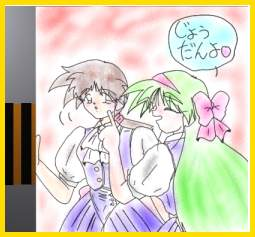
「やっぱり、これも、お約束なのよね・・・」朋子ちゃんは、ため息をつき、空を見上げる。
「あははっ、冗談よ！！」
瞳ちゃんは、そう言い、朋子ちゃんの頬をつつく。
「あははっ、そうよね、じょうだん、冗談よね！」
しかし、何か言いしれぬ不安をぬぐいされず、何とも言えない表情をする
朋子ちゃんだった。
（おしまい）
（エンドレスエンド）
朋子ちゃんと別れ、１人家に帰る瞳ちゃん。
「今日は、バカ仁志のせいで、さんざんな目にあったわ」
「早く帰って、仁志に汚された体を清めましょ！！」
すると・・・・
「そう簡単には、家に帰らさないぜ、瞳ちゃん！！」
カポッ！
瞳ちゃんを追いかけてきた仁志が、後ろから瞳ちゃんの頭に、入れ替え君１号のヘルメットをかぶせる。
「きゃっ、何するのよ、バカ仁志！！」
そう言って、振り返る瞳ちゃんに、ニタニタしながら仁志は答える。
「何って、お前ともう一回、入れ替わるんだよ！！」
「まだ、入浴イベントや、タンスチェックイベントや、鏡を見てドキドキイベントなどの、お約束イベントを、
全然やってないだろ！！」
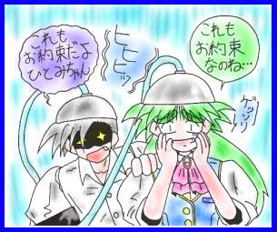
「だ〜〜〜か〜〜〜〜ら〜〜〜〜〜」瞳ちゃんを見つめる仁志の目が、妖しく光る。
「いっ、いやぁ〜〜〜！！」
絶叫を上げる、瞳ちゃんに仁志は冷静に言い放つ。
「これも、お約束のためだよ、瞳ちゃん！」
「こんなオチなんて！」
「いや〜〜〜〜〜〜〜〜〜〜〜〜〜〜〜〜〜〜っ！！」
（おしまい？）
＜実験小説＞
＜その、最後！＞
＜あとがき＞
ここまで読んでくれて、ありがとうございます。
今回、最後と言う事で、このあとがきの司会を、やる事になりました、北条 鈴です。
では、今回はまず、お葉書を貰っているので、読ましてもらいます。
え〜〜と、Ｏ県にお住まいの、オヤジさんからの、懐かしの一発ギャグ。
わけっわかめ〜〜〜！！
・・・・・・・・・
・・・・・・・・・
オヤジさんの方が、わけっわかめ〜、ですよ！！
っと、こんなお葉書ネタも、やりたかったそうです。
ではでは、そのオヤジさんからコメント貰っているので読んで下さい。
＜あとがき：オヤジ＞
どうも、影でゴソゴソするのが好きな、オヤジです。
今回、やっとの事で実験小説、発足当初からの目標の、このマルチサイトを使ったＰＲＯＭＩＳＥが、出来て良かったです。
なんせ、うちの相方は、全て手探りで、やってたので、自信がつくまで三つも話を、書かなけりゃならんかった。
まぁ、わいは、元ネタと、キャラ設定と、シリーズ構成だけだったので、どっちゅう事無かったんじゃけど・・・・
後、今回のおまけシナリオで、ＲＥＩＫＯ１．５を書いたんじゃけど、あれって、書く予定は全然なかった。
じゃけど、やっぱり、つづき書かないんですか？とか、言われたら、うれしくって、調子に乗って書いてしもうた・・・・
１．５って言うのは、ＲＥＩＫＯの続編はまた別にあって、あれはおまけ用に急遽考えた物、って訳で１．５なんです。
それでは、最後に、また良かったら感想書いて下さいお願いします。
では、さようなら
次は、角さんのコメントです。
＜あとがき：角さん＞
こんちは、角さんです。
毎回、あとがきで、壊れキャラになっているので、今回は、真面目に書きます。
今回は、いろんな事で、かなりのボリュウムになってしまった、いい事なのか悪い事なのか・・・・
まぁ、最後なんで許して下さい。
ダウンロ−ドに時間がかかるのは、全て、俺の絵のせいです。ごめんなさい、調子に乗って、書きすぎました。
でも、うちって、状況描写や、キャラ描写が少ないから、ある程度絵でホロー入れとかないと、解らないかなぁっと、
思ったからです。
って、言うのは建前で、ただ絵が書きたかっただけです・・・
しかし、平日４日で１５枚は辛かった。でも、ＲＥＩＫＯの、一日で１２枚よりは、ましか・・・・
さて、まだまだ、書きたいことは、たくさんあるけど、ここら辺でやめときます。
今まで、実験小説を読んで下さった皆さん、感想を書いてくれた諸先輩方、そして、この実験小説を載せてくれた、
八重洲さん、本当に、ありがとうございました。
では、さようなら。
（鈴） あとがきのコメントは、終わった事ですし、最後にみんなで挨拶して終わりましょうか！
（角さん） ちょっと待て！！
（鈴） どうしたんですか、角さん？
 （角さん） 最後に、みんなに、伝えなければならない事があるんだ！
（角さん） 最後に、みんなに、伝えなければならない事があるんだ！
（鈴） はぁ、何ですか？
（角さん） 実は、私、女子高生だったんですぅ〜〜〜！！
（鈴） ・・・・・・・
（オヤジ） どこの世界に、ヒゲはやした女子高生が、おるんじゃ！！
バコン
（角さん） あうぅ〜、すいません、嘘つきました。
（鈴） チャンチャン！！
（鈴） っと言う事で、今回で、実験小説は終わりです。
（角さん、鈴、オヤジ） 皆さん、本当にありがとうございました、さようなら〜〜〜〜！！
実験小説
＜完＞